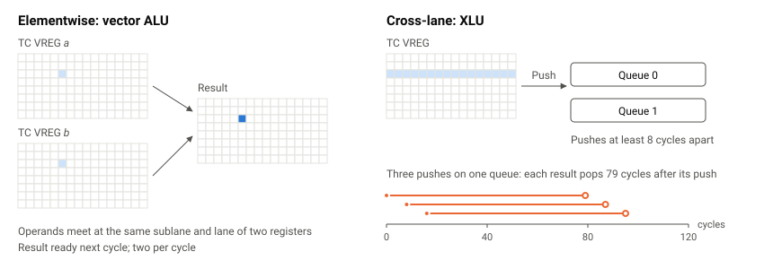
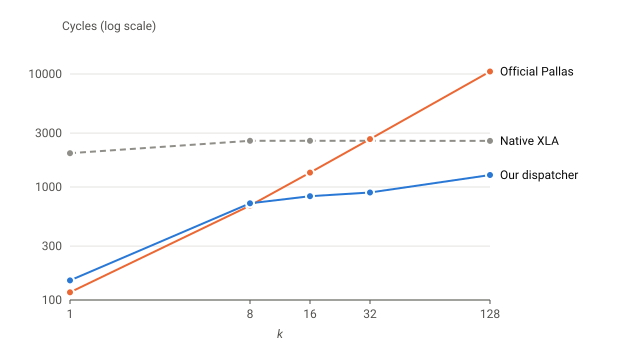
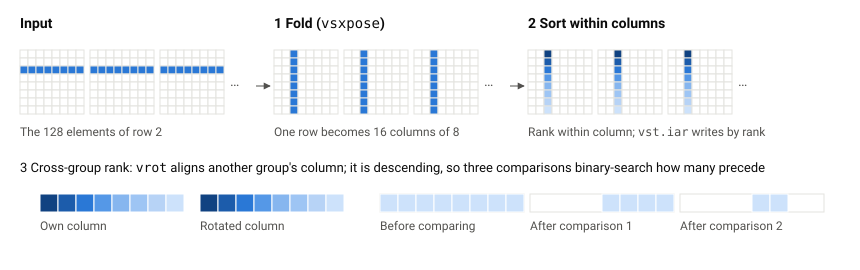
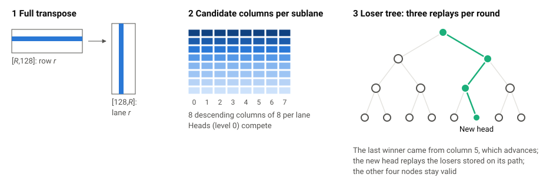
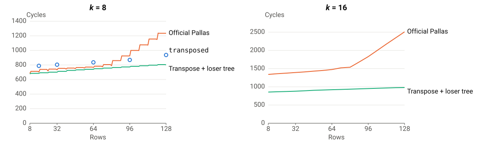
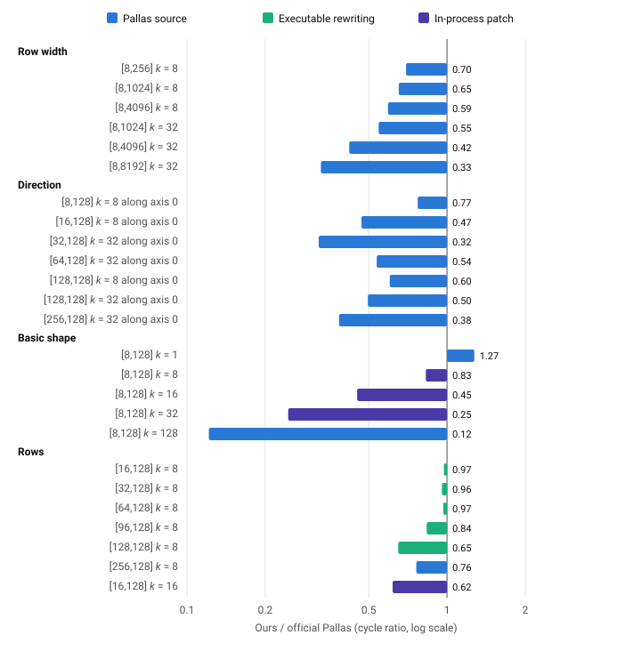

GitHub: ayaka14732/tpu-v4-top-k
Paper PDF: https://doi.org/10.5281/zenodo.23287738
Abstract: When
jax.lax.top_kis called inside a Pallas kernel on TPU, Pallas’s official implementation returns duplicate indices if the input contains-inf, and a source comment states that the behavior is kept on purpose because fixing it would be too expensive. We test whether this trade-off is necessary on a single TensorCore of TPU v4: for f32 data already in TC VMEM, can row-wise top-k be both bitwise correct and faster than official Pallas? We define correctness by the IEEE 754totalOrderand find thatjax.lax.top_kcompiled by native XLA satisfies it, whereas official Pallas’s errors go beyond duplicate indices: it is wrong on 70706 of 197592 inputs covering special values. A bitwise-correct formulation takes only 4.7% more cycles for top 8 off32[8,128], so the fix is not expensive. To go faster, we reduce the running time of a formulation to the round-trip latency of the cross-lane unit XLU, the XLU issue interval, and the number of elementwise vector instructions, and choose a formulation for each shape accordingly: using only Pallas’s existing API, we are faster than official Pallas on 20 of 25 shapes, with a geometric-mean speedup of 1.67× in cycles, and faster than native XLA on all of them. On the remaining shapes official Pallas already spends little more than one XLU round trip per selected element; for these we propose two algorithms, fold-and-rank and a loser-tree merge after a full transpose, which raise the number of shapes faster than official Pallas to 24. Both use instructions that cannot currently be reached from Pallas, and we first implement them by inserting handwritten assembly into the compiled program. For fold-and-rank we go further: we patch the closed-source compiler libtpu in process so that it emits these instructions, and then reorder the instructions by measured latencies. Fold-and-rank thereby becomes a Pallas function of about sixty lines whose compiled program is faster than the handwritten one. Pallas’s approximate top-k calls the same official implementation and inherits its errors; with our formulations they are all removed, and it is faster on most shapes. To support these instruction-level experiments we built tpuasm, a TPU assembler whose instruction-set information comes entirely from the publicly released libtpu.
Top-k is a common operator in neural networks: MoE routing picks the highest-scoring experts for each token, sampling takes the most probable tokens from the logits, and sparsification methods use it to keep the most important activations. This report focuses on one class of use: inside a fused TPU kernel, computing top-k row by row over a block of data that is already in TC VMEM, with a few hundred to a few thousand elements per row and a few to a few hundred rows per block. For example, the MoE layers of Qwen3 select 8 of 128 experts [29]; when the routing matmul and the top-k are written in the same kernel, the input of the top-k is a [T,128] block with k = 8. Sampling over a whole vocabulary (over a hundred thousand elements per row) and large-scale selection with k in the thousands are out of scope: we measure row widths up to 8192 and k up to 128, and prior work at larger scales is reviewed in Chapter 10.
There are two ready-made ways to compute top-k with JAX on TPU. One is to call jax.lax.top_k directly and let XLA compile it; we call this native XLA. The other is to call the same function inside a Pallas kernel, where _top_k_impl in the JAX repository expands it into k rounds of argmax that Mosaic then compiles; we call this official Pallas. The latter lets top-k share data that is already in TC VMEM with the rest of the kernel, and it is the only ready-made formulation Pallas offers when writing a fused kernel.
Exact top-k on GPUs has been studied systematically [10–14, 33]; prior work on TPU consists of approximate algorithms [17, 18] that trade recall for parallelism. The TPU instruction set is not public, and published material stops at the architecture level [26–28]. To our knowledge, no prior work analyzes exact top-k on TPU at the instruction level (Chapter 10).
The official Pallas implementation begins with this comment [1]:
Note: This iterative argmax implementation assumes the input has at least k values distinct from
-inf. If the input contains fewer than k values distinct from-inf, all remaining elements will be tied at-infafter masking, which may cause repeated indices in the output. We keep this behavior to avoid adding expensive defensive masking logic.
In other words, the implementation returns duplicate indices on a class of inputs, the authors know it, and they keep the behavior for performance. Such inputs are not rare: -inf is the standard way to mask logits, and the problem appears whenever a row has fewer than k valid candidates. Native XLA does not have this problem.
The comment implies a judgment: correctness and speed cannot be had together. This report tests that judgment through three questions.
f32[8,128] and the case of a middling number of rows with small k, can we still be faster? (Chapters 5 and 6)Most of the building blocks we use already exist: the definition of correctness is IEEE 754’s totalOrder [30], the conditional XOR that turns floating-point bit patterns into comparable integers is a common radix-sort technique [31], and comparison networks [4], enumeration sort, and loser trees [32] are classical algorithms. Our contribution is to find out what constrains each of them on TPU, how to combine them, and how to get the compiler to emit the instructions they need.
totalOrder, ordering NaNs of the same sign by bit pattern where the standard leaves the order to the implementation; this matches native XLA and the CPU bit for bit. Under this definition the official implementation’s errors go beyond duplicate indices: it also returns values that do not pair with their indices and out-of-range indices, loses NaNs for some data placements, and does not preserve the order of bit patterns. On 197592 inputs covering special values, the official implementation is wrong on 70706, while ours and native XLA have no errors (Chapter 4).jax.lax.approx_max_k first buckets the input and then calls the same top-k on the candidates, and its first stage also loses NaNs. Putting our formulations into both of its stages removes all errors on 2752 inputs and makes 4 of the 5 timed shapes 33% to 53% faster than the official version (Section 8.3).Chapter 2 introduces the TPU v4 TensorCore, the analysis framework, and how the two baselines work. Chapter 3 describes the method and experimental setup: tpuasm, how instruction semantics and latencies are measured, the timing boundary, the measured shapes, correctness verification, and scope and reproducibility. Chapter 4 answers RQ1; Chapter 5 gives speedups using only Pallas’s existing API and Chapter 6 gives two new algorithms, which together answer RQ2; Chapter 7 answers RQ3. Chapter 8 summarizes the results on the 25 shapes, compares the analysis framework with measurements, applies the work to approximate top-k, and reports correctness verification. Chapter 9 discusses generalizable findings, recommendations for upstream, and limitations; Chapter 10 covers related work, and Chapter 11 concludes.
A TPU v4 chip has two TensorCores (TCs below), which together are called the Megacore. Each TC has its own scalar unit, vector unit, four MXUs for matrix multiplication, and an XLU for cross-lane operations [26, 27].
Data passes through four levels of storage from far to near, as shown in Table 1. HBM and CMEM are each a single memory for the whole chip, and both TCs can access all of their addresses. The capacities of HBM and CMEM were measured, as described in Appendix C.1; the capacities of TC VMEM and SMEM are those reported by pltpu.get_tpu_info().
| Storage | Ownership | Capacity | Access |
|---|---|---|---|
| HBM | Shared by the two TCs of a chip | 32 GiB | DMA only |
| CMEM | Shared by the two TCs of a chip | 128 MiB | DMA; or cld into the queue crf, then vpop into a TC VREG |
| TC VMEM | Private to each TC | 16 MiB | vld and vst from the vector unit |
| TC VREG | Private to each TC | 32 registers of 4 KiB | Operands and results of vector instructions |
Table 1: Storage available to one TC of TPU v4.
Program arguments and results live in HBM by default, and XLA often places intermediate arrays in CMEM. A Pallas kernel can declare an array in TC VMEM and move data in with its own DMAs. This report is concerned only with computation after the data is already in TC VMEM (Section 3.5). In addition, each TC has 1 MiB of scalar memory, SMEM, read and written by the scalar unit; the cycle-counter readings of Section 3.3 are stored there.
Sublanes and lanes. A TC VREG holds 8 × 128 32-bit words. The 8 rows are called sublanes and the 128 columns lanes. An elementwise vector instruction does the same thing at all 8 × 128 positions at once, and the two operands at a position come from the same sublane and the same lane of two registers; to make elements in different lanes or sublanes meet, the data must be moved explicitly, and Section 2.2 discusses what that costs. TC VMEM is addressed with the same shape: a tile is 8 rows × 128 words, and one vld or vst reads or writes one tile, exactly one TC VREG. Besides the TC VREGs there are 8 mask registers vm0 to vm7, each 8 × 128 bits, which hold comparison results and are used for masked stores, and 2 index address registers (IARs), which give each element its own row offset in indexed loads and stores (Section 3.2).
How arrays map onto TC VREGs. An f32[8,128] array fits exactly in one TC VREG: row r occupies sublane r and column c occupies lane c. When rows are wider than 128, a row spans several TC VREGs, and each 128 lanes form a lane tile; when there are more than 8 rows, every 8 rows form one TC VREG. This is one of XLA’s layouts, written {1,0:T(8,128)} in HLO (Section 3.4), and it is the layout Pallas kernels use for two-dimensional f32 arrays in TC VMEM. So when top-k is taken along the last dimension, the elements to compare lie in different lanes of the same sublane; along the first dimension, they lie in different sublanes of the same lane.
Instruction bundles. A TC executes VLIW instruction bundles: a bundle contains several instructions, each occupying a fixed slot, issued together. Scalar operations, vector operations, TC VMEM loads and stores, and pushes to and pops from units such as the XLU each have their own slots. The listings in this report write each instruction’s slot before it; for example, { va0: vadd.8x128.s32 v1, 1, v1 ; vld: vld.8x128 v2, [vmem:0x8] } is one bundle in which an add occupies the vector ALU slot va0 and a load occupies the vld slot, and both are issued together. The vector side issues in bundle order: if a result a bundle needs is not ready yet, that bundle and all later bundles wait (Section 3.3).
Top-k must compare elements at different positions within a row, and the hardware offers two ways to do so with very different costs.
Cross-lane operations can only be done by the XLU. The XLU is a push-pop unit: a TC VREG is pushed in, and some time later the result is popped from a queue (Figure 1). Reductions (vmax.xlane, vmax.index.xlane) take 79 cycles from push to pop, and rotations (vrot) take 69 cycles; consecutive pushes to the same queue must be at least 8 cycles apart, and each TC has two queues. Reductions accept only f32.
Elementwise operations are done by the vector ALU: comparisons, selects, additions, and subtractions between corresponding positions of two TC VREGs, with the result available in the next cycle, two instructions per cycle, and integer versions available. Reductions along the sublane direction and merges of several lane tiles are built from such instructions and do not go through the XLU.

All of these numbers were measured by us, as described in Section 3.3. They yield a simple analysis framework. The time of a piece of top-k is determined by one of three things: when XLU operations depend on one another, the length of the dependence chain times 79 cycles; when there are many independent XLU operations, the number of operations times the issue interval; when nothing goes through the XLU, the number of vector ALU instructions. Every reason a formulation in this report is fast or slow falls into one of these three classes. The framework only identifies which class the bottleneck belongs to; it does not predict exact cycle counts. Section 8.2 compares the lower bounds it gives with measurements.
For k = 1, native XLA calls a general top-k custom call; for other k it usually sorts the whole row together with its indices and takes the first k. Its cycle count therefore hardly changes with k and grows with the number of rows and the row width.
Official Pallas loops for k rounds, each taking the maximum and its index, then overwrites the selected position with -inf:
curr = operand
for _ in range(k):
idx = lax.argmax(curr, axis=axis, index_dtype=index_dtype)
val = jnp.max(curr, axis=axis)
mask = iota == jnp.expand_dims(idx, axis)
curr = jnp.where(mask, min_val, curr) # min_val is -infIn terms of the framework of Section 2.2, each round’s argmax depends on the previous round’s curr, so the k vmax.index.xlane operations form a chain of length k, at a little over eighty cycles per round, 79 of which are spent waiting for the XLU. Its cycle count is proportional to k.
Most experiments in this report have to answer the same kind of question: which instructions did the compiler actually emit, and in which slot of which bundle is each one; and after replacing, moving, or inserting a few of them, is the program faster? Existing means cannot do this. The compiler can print its final LLO as text (final bundles), but that is a representation one level above the machine program: it contains pseudo-instructions that occupy no slot, does not show physical slots, cannot distinguish some machine instructions that differ in a field, and cannot be assembled back after editing. A single-variable controlled experiment would then require changing higher-level source, which makes the compiler reschedule other instructions as well.
So we wrote tpuasm [5], an assembler and disassembler that works directly on machine programs. It does four things.
va0: and vx1: naming the slot. Only instructions that actually occupy slots are listed. Comments in the listing record which line of the Pallas source each instruction came from, captured from the compiler during compilation.Where instruction names, operands, and encodings come from. The TPU instruction set has no public documentation, and readers may reasonably ask how tpuasm knows these instructions. The answer is that everything comes from the publicly released libtpu, without any non-public material. libtpu is a binary package installed from PyPI with the TPU version of JAX [6], and it contains the compiler and the runtime. It embeds a complete ISA description (a protobuf descriptor) that lists, slot by slot, every instruction form and its fields; it also contains functions that encode instructions into machine words and decode machine words back into instructions. tpuasm’s instruction table is generated from this descriptor: the TPU v4 TensorCore has 582 in-slot forms, of which 573 are registered. The final bytes of a program image are produced by libtpu’s own encoder and interpreted by its own decoder when read. So every instruction tpuasm accepts is one this libtpu can encode, and the disassembled listing corresponds byte for byte to the program the compiler actually produced. In libtpu 0.0.49, C++ class and function names can be looked up (for example LloRegionBuilder::Vxpose and LatencyTablePufferfish); Chapter 7 uses them to locate the layers of the compiler.
Some instructions already have real uses inside the compiler. The instructions used in Chapters 6 and 7, vsxpose, vsetiar, vld.iar, vst.iar, and vld.sshfl, are all in this instruction table. Some of them also have real uses inside the compiler: XLA programs contain vsetiar instructions at their start, and tpu.gather in the TPU dialect compiles to vst plus vld.sshfl on TPU v4 (Section 7.3). They cannot be reached from Pallas only because several layers of entry points are missing between Pallas and these instructions.
Chapters 6 and 7 use several instructions that cannot be reached from Pallas. The instruction table gives only names and operands, not semantics; the semantics likewise rely on no internal material, and anyone with a TPU v4 can reproduce them.
Instruction semantics are determined by on-device experiments. Names are only hints. The method is to insert one instruction into a carrier kernel that only moves data, run it on the device with random inputs, read the results back to the host, and compare them element by element with a model written in NumPy; when the model is wrong, the model is revised until everything matches. Table 2 gives the final models of four instructions, each checked with 4 random u32[8,128] inputs, with all 4096 elements matching (semantics.py, output in results/semantics.txt).
| Instruction | Semantics established by experiment |
|---|---|
vsxpose, width 8 |
Transposes each of the 16 8 × 8 blocks in a TC VREG: y[s,8g+r] = x[r,8g+s] |
vld.sshfl, pattern P |
Loads one tile; sublane s takes the row given by the s-th hex digit of P |
vsetiar.raw plus vld.iar |
Each element loads at its own row offset: y[s,l] = M[A+s+offset[s,l],l] |
vsetiar.raw plus vst.iar |
Each element stores at its own row offset: M[A+s+offset[s,l],l] = x[s,l] |
Table 2: Instructions used in this report that cannot be reached from Pallas, with their experimentally established semantics. M is TC VMEM, A is the base address given by the instruction, s is the sublane index, and l is the lane index.
The restrictions of instructions were also found by experiment. For example, if two elements in the same column of a vst.iar write to the same row, the TensorCore halts; which combinations halt the masked version was found case by case (Appendix B). The only risk of such experiments is a halt, after which the program can simply be reloaded.
The latencies of Section 2.2 and the various waits used later were all measured with the on-device cycle counter LCC, which is read with the scalar instructions srdreg.lcclo and srdreg.lcchi. The method is to insert a handwritten fragment into a carrier kernel: read the counter, execute the instructions under test, and read it again. Vector instructions issue strictly in order; when a result an instruction needs is not ready (popping an XLU result, reading a tile that was just written), the hardware stalls it and everything after it waits. So with an sfence before the reading, which waits until all vector instructions have issued, the difference between the two readings includes the wait. An empty fragment reads 13 cycles, which is the fixed overhead of the readings themselves.
For example, “push one reduction and pop it” reads 92, and subtracting 13 gives 79 cycles from push to pop; pushing 2 and 8 times on the same queue and then popping reads 100 and 148, 8 more cycles per push, which is the interval between consecutive pushes; splitting 16 pushes across two queues still reads 148, showing that the two queues do not interfere. Table 3 gives all results (latency.py, output in results/latency.txt). Each reading was repeated 8 times with identical results.
| Fragment under test | Reading | Conclusion |
|---|---|---|
| Empty | 13 | Fixed overhead of the readings |
16 dependent vadd |
29 | Elementwise results are ready the next cycle |
16 dependent vrot.slane.down |
43 | Rotation along sublanes takes two cycles |
vmax.xlane, vmax.index.xlane, vadd.xlane, each pushed once and popped |
92 | Reductions take 79 cycles from push to pop |
vmax.xlane pushed 2 and 8 times on one queue |
100, 148 | Consecutive pushes to a queue are 8 cycles apart |
vmax.xlane pushed 8 times on each of two queues |
148 | The two queues do not interfere |
vrot pushed once and popped |
82 | Rotations take 69 cycles from push to pop |
vrot 8 times, alternating XLU numbers 0 and 2; 0 and 1 |
138; 107 | The four XLU numbers in instructions map to two queues by their lowest bit |
vsxpose width 8, pushed once and popped |
139 | The segmented transpose takes 126 cycles from push to pop |
vxpose width 128, pushed once; pop the 1st result, all 16 results |
139, 264 | The first result of a full transpose arrives with the segmented transpose, then one TC VREG every 8 cycles |
4 vrot on the same queue after vsxpose; on the other queue |
330; 233 | After the transpose result is popped, its queue stays busy for about 97 more cycles, about 223 cycles after the push |
Two and four consecutive vsxpose on the same queue |
267, 523 | Each extra one adds 128 cycles: the next starts only when the previous result is out |
| 8 × (store tile A, load tile A); 8 × (store tile A, load tile B) | 77; 29 | Loading a tile just stored costs 8 cycles per pair; loading another tile does not wait |
8 × (vsetiar, vld.iar) |
60 | An indexed load after loading the IAR costs about 6 cycles per pair |
8 × (store tile B, vld.iar from tile A) |
61 | An indexed load after any store waits, whichever tile was stored |
Table 3: Measured latencies. Readings include the 13-cycle fixed overhead.
These numbers have independent corroboration: the compiler has its own latency table. libtpu’s scheduler asks LatencyTablePufferfish how many cycles must separate two instructions; hooking this virtual function to record the queries and answers (latency_probe.py, output in results/latency-probe.txt), its answers while compiling top-k are 79 from push to pop for reductions, 69 from push to pop for rotations and indexed permutations, and 8 between consecutive pushes on the same XLU, matching the first half of Table 3. The waits in Table 3 related to transposes and IARs are either missing from the compiler’s table or too small (Section 7.3); those are what we supply by measurement.
For a whole program, the same method gives the actual issue time of every bundle: in the same executable, only the position of the second reading is moved forward one bundle at a time (issue_profile.py). Chapter 7 uses this to calibrate the timing model used for scheduling, and the rule that “an indexed load after any store waits” was found this way: the difference between measurement and model jumped only at bundles containing vld.iar.
Cycles and time. The frequency of LCC was measured against the host’s CLOCK_MONOTONIC (clock_rate.py, output in results/clock-rate.txt). LCC keeps counting between runs, so many runs can be strung together into one timeline: a short kernel runs 200 times over about 20 seconds, reading LCC at both ends of the kernel each time, and the host reads its clock before and after each call. The true times of the first and last readings are each bracketed by host readings, so dividing the whole LCC difference by the lower and upper bounds of the host interval gives an envelope of 1049.989 to 1050.010 MHz in each of two separate measurements, consistent with the published 1050 MHz of TPU v4 [27]. So one cycle is about 0.95 ns, and 100 cycles below correspond to about 95 ns. All results in this report are given in cycles and can be converted this way when needed.
A Pallas kernel can declare that its operands and results are in TC VMEM. To make native XLA’s top-k also start in TC VMEM and end in TC VMEM, three things must be expressed separately in the program; if any one is missing, what is measured is not the same thing (shell.py).
from jax._src.state import primitives as state
from jax.experimental.layout import Layout, with_layout_constraint
ROW = Layout(major_to_minor=(0, 1), tiling=((8, 128),))
def pinned_row(x):
return with_layout_constraint(state.unpin(state.pin(x, to='vmem')), ROW)
def program(x):
v, i = top_k(pinned_row(x)) # native XLA, or a Pallas kernel whose operand and results are declared pltpu.VMEM
return jax.lax.optimization_barrier((pinned_row(v), pinned_row(i)))Memory space. Compiled HLO marks the memory space of each array with S(n) after its layout: arrays without S are in HBM, S(1) is TC VMEM, and S(3) is CMEM; this is the numbering of this version of the TPU backend. pin(x, to='vmem') emits a Pin custom call that sets the memory space of its result to TC VMEM, so after compilation its layout carries S(1); unpin turns the buffer handle back into an ordinary array. These are internal JAX interfaces. A device’s memory_kind has only device (HBM) and two kinds of host memory and cannot express TC VMEM; the public jax.ref.new_ref(x, memory_space=pltpu.VMEM, pin=True) does not pass the target memory space to Pin in the current version, so the result is correct but the value stays in HBM.
Layout. XLA uses a layout to describe how the elements of an array are placed in memory. The placement of Section 2.1 is written {1,0:T(8,128)}: {1,0} lists the dimensions from fastest-varying to slowest, so dimension 1 (columns) varies fastest, and T(8,128) is the tile shape, tiles of 8 sublanes by 128 lanes. Pallas kernels use this layout for two-dimensional f32 arrays in TC VMEM; adding the memory space S(1) from the previous paragraph gives {1,0:T(8,128)S(1)}. All three endpoints of the timing interval (the input and the two results) are required to have this layout, so that native XLA starts from the same data and delivers the same results as the Pallas kernel. For some shapes XLA chooses a transposed layout (for example, [16,8] occupies only one tile after transposition) and inserts a layout-changing copy between Pin and Unpin, where copies are not allowed, causing a compilation error. with_layout_constraint [7] fixes the layout; it must be applied after Unpin, and constraining only the input before Pin is not enough.
A common endpoint. Without optimization_barrier, XLA may write one result out to HBM before finishing the other, so an outward transfer happens before the moment when “both results are in TC VMEM”. After both results pass through a barrier together [8], their Pins and Unpins are all scheduled before the first outward write.
The timing interval starts at the end of the input’s Unpin and ends at the end of the later of the two outputs’ Unpins. LCC is read once at each end, and 20 cycles of reading overhead are subtracted from the difference. These readings differ from those in Section 3.3: they must be inserted into a complete compiler-generated program and cannot use scalar registers the compiler is using, so each reading first saves the two borrowed scalar registers to SMEM and restores them afterward, and the reading itself is also written to SMEM, 8 bundles in all including the sfence; with nothing between two such readings, the difference is 20 cycles. The carrier kernel of Section 3.3 is handwritten, so registers can be used freely, one reading occupies one bundle, and the fixed overhead is 13 cycles. We do not insert a pair of readings around each HLO instruction and add them up: each reading carries an sfence that breaks the overlap of vector instructions, so such a sum is not the time of continuous execution. For every program measured, the scripts check that the three endpoints are all {1,0:T(8,128)S(1)} in the compiled HLO, that all instructions belonging to the top-k (including the input-independent iota) fall inside the interval, and that there is no DMA to or from HBM inside the interval.
All implementations use exactly the same harness and differ only in the top-k in the middle. The Pallas implementations are kernels without DMAs or semaphores; the executables we rewrite (Chapters 6 and 7) are also rewritten and timed in this harness. Native XLA may have its own transfers inside the interval, for example moving the index array it generates from CMEM into TC VMEM, or transposing through CMEM; these transfers are part of the algorithm XLA chose, so they count toward its cycles.
Each program runs once on each of 8 inputs, each sort axis holding a random permutation of 0 to n − 1; the first two runs are discarded and the median of the remaining six is taken. Both the program with readings inserted and the one without are checked element by element on all values and indices.
All six readings of every Pallas implementation are identical, whereas most native XLA programs vary by 1 to 3 cycles. The difference is whether there is DMA in the interval. When an instruction issues is determined statically by the program itself: an instruction waits for the result of an earlier instruction or for a unit to become free, neither of which depends on the run, so as long as the interval contains only instructions, every run takes the same number of cycles. Most native XLA programs have DMAs between CMEM and TC VMEM inside the interval, and when the instruction waiting for such a DMA is released depends on the state of the memory system at the time, which is dynamic. This can be checked directly (xla_inputs.py, output in results/xla-inputs.json): for each shape, 4 different inputs are each run 6 times on the same program. The 18 shapes with DMA in the interval vary by 1 to 3 cycles even when the same input is repeated, and the variation does not depend on the input; of the 7 shapes without DMA, 6 read the same whether or not the input changes. The remaining one is top 8 of [8,4096]: XLA uses a dedicated top-k custom call for this shape, repeated runs on the same input are constant, and different inputs differ by 2 cycles, showing that it contains data-dependent branches. The cycle counts of the other 24 shapes do not depend on the input: most of them sort, and there are no data-dependent branches in the interval.
This boundary is stricter than “measuring only the middle part of a kernel”. Input-independent preparation (constants, masks, index arrays) is also counted inside the interval; if the starting point were placed after some wait inside the kernel, the compiler would schedule this work before the starting point, the readings would be too small, and by different amounts for different formulations.
A compiler bug. For two shapes, row width 256 with k = 8 and row width 1024 with k = 32, native XLA fails to compile in this harness: it fuses the sort and the selection of the first k columns into one fusion, and Pin’s memory space is added only to the outside of the fusion and not propagated to its root inside. There are two ready-made workarounds, but both change what is measured: disabling the fusion makes XLA fall back to an ordinary sort, so what is measured is no longer its default implementation; disabling Pin’s precoloring takes the three endpoints out of TC VMEM. So we instead add the missing propagation in process, and these two shapes keep XLA’s original fused implementation; they are marked ‡ in the tables. Details are in Appendix C.2.
Every performance claim in this report is compared against both baselines.
jax.lax.top_k(x, k) compiled directly by XLA, taking the faster of is_stable=False and is_stable=True. It is the reference for correctness and the performance without Pallas._top_k_impl, placed in a kernel that does nothing but top-k. It is the status quo with Pallas.All implementations are compared within the same boundary: the input is already in TC VMEM, the two results stay in TC VMEM, and there are no transfers to or from HBM inside the timing interval. This is exactly the situation of a top-k that follows other computation. Native XLA can also be placed in this boundary, as described in Section 3.4. This is the only timing boundary in the report.
Performance is compared on 25 selected shapes (TIME_CASES in compare.py), all f32. JAX’s upstream top-k tests check only correctness and offer no performance benchmark to reuse, so we start from the basic shape f32[8,128] (exactly one vector register, Section 2.1) and vary mainly one dimension per group to observe its effect on each implementation. The four groups follow the order of Chapter 5, each corresponding to one bottleneck:
f32[8,128] along the last dimension, k of 1, 8, 16, 32, and 128, 5 shapes (Table 8, Section 5.3).[16,128], 7 shapes (Table 11, Section 5.4).The group with row width 128 and k = 8 is exactly the MoE routing shape of Section 1.1.
Three deployment forms. Our formulations reach the device in one of three ways. Pallas source: only Pallas’s existing API, entering the public compilation path by replacing _top_k_impl. Executable rewriting: using tpuasm to insert handwritten fragments into the compiled program or to reschedule part of it. In-process patch: modifying the libtpu already loaded in the process so that the compilation pipeline itself emits the needed instructions. All formulations of Chapter 5 and the general dispatcher are of the first kind; fold-and-rank and the loser tree of Chapters 6 and 7 need one of the latter two. In the tables of Chapters 5 and 6, the column “Ours” always means the general dispatcher, results that use the latter two forms are given in separate columns, and the summary in Section 8.1 marks the deployment form shape by shape.
Correctness checks use a separate, wider set of inputs that includes irregular shapes and three-dimensional arrays (Section 4.5).
All formulations are verified with the four checks of Section 4.4, and the tests go through the public Pallas compilation path: _top_k_impl is replaced at compile time while the kernel still calls jax.lax.top_k(..., is_stable=False). The checks have four layers: the general dispatcher is checked on a batch of inputs covering special values (Section 4.5); every timed program, including native XLA, is checked element by element on all values and indices, both with and without the readings inserted; formulations that rewrite executables or rely on in-process patches are additionally checked in the timing harness with inputs containing special values; and the instructions that cannot be reached from Pallas are first compared element by element with NumPy models (Section 3.2). The results are in Chapter 8.
This is broad verification, not a proof over all combinations of bit patterns; the correctness of the key transformation being a bijection, of the two-phase processing, and of the minimum-key rank correction follows from derivation.
This report addresses top-k on a single chip and a single TensorCore and does not cover algorithms in which several cores cooperate; the experiments run on one TensorCore of one TPU v4 chip, with libtpu 0.0.49. Data types are limited to f32; top-k in bfloat16 requires newer hardware and is not covered.
All information used in this report comes from publicly released software and experiments on real hardware, without any non-public hardware or compiler material: instruction names and encodings come from the libtpu release package itself, and instruction semantics and latencies are determined by experiment, as described in Sections 3.1 to 3.3. All code for this report is in this directory and depends only on JAX, libtpu, and tpuasm, the assembler we wrote for this work (Section 3.1); every table and figure has a corresponding script and raw record; file descriptions and reproduction commands are documented in the repository README, and the experimental environment is given in Appendix A. This report does not modify JAX or libtpu on disk: following the three deployment forms of Section 3.5, the formulations of Chapters 4 and 5 enter the public Pallas compilation path by replacing _top_k_impl; the handwritten fragments of Chapter 6 and some formulations of Chapter 7 rewrite compiled executables; and the patches of Chapter 7 affect only the libtpu already loaded in the process.
This chapter answers RQ1. Sections 4.1 to 4.3 describe the three kinds of errors in official Pallas, Section 4.4 derives the definition of correctness from them, Section 4.5 compares the three implementations on a batch of inputs covering special values, and Sections 4.6 to 4.10 measure the cost of fixing the errors.
Official Pallas uses the value -inf as the “selected” marker. When the input itself contains -inf, the two cannot be told apart. Take f32[8,128] in which each row has finite values 3, 2, and 1 only in lanes 0, 127, and 1 and -inf everywhere else, with k = 8. The first three rounds are fine. In round 4 the whole row is -inf, all tied, and argmax returns lane 127; “changing” it to -inf changes nothing, and every later round selects 127 again:
values: [ 3. 2. 1. -inf -inf -inf -inf -inf]
indices: [ 0 127 1 127 127 127 127 127]The comment speaks of duplicate indices, but the consequences are worse. The input at lane 127 is 2.0; it is returned as a real value in round 2 and then returned 5 more times with the value -inf, so values and indices no longer pair up, and gathering the input by these indices uses the same score 6 times. The same cause shows up in two other ways: when the row width is not a multiple of 128, a fully tied row returns the last lane of the TC VREG, which lies outside the array, so an all--inf f32[8,100] returns index 127; and approx_max_k ends by calling the same function and is affected in the same way (Section 8.3). Only an exact -inf triggers the problem; replacing it with a very small finite value such as -1e30 gives fully correct results.
The second kind of error is not in _top_k_impl but in the argmax it calls. Argmax is done by different hardware paths for three placements: when a row is in one TC VREG it is a single vmax.index.xlane; when rows are wider than 128, the vector ALU first merges the TC VREGs, followed by one vmax.index.xlane and one vperm; along sublanes it is an elimination tree built from vrot.slane.down, vge, and vsel. The three paths follow different rules.
On ties, one lane tile returns the one with the largest lane index; several lane tiles return, among the tied elements, the one with the largest “index modulo 128”, which is neither the first nor the last; along sublanes the result is determined by the structure of the elimination tree and has no simple rule. JAX #34620 [2] describes the problem as “returns the last index”, which holds only for a single lane tile.
NaN is a bigger problem. When merging TC VREGs, the value is taken with vmax, which propagates NaN, but the index is chosen by the result of vge, and every comparison with NaN is false. So with several lane tiles, only a NaN in the last lane tile is found, and along sublanes none of the positions tested is found, so x[argmax(x)] = max(x) does not hold. The effect on top-k is larger than on a single argmax: a NaN that is not selected is not marked as selected, so the maximum of every round is still NaN.
values: [nan nan nan nan nan nan nan nan]
indices: [124 122 244 109 233 102 98 97]
expected: [nan 3. 3. 3. 3. 3. 3. 3.]This code is generated by closed-source Mosaic, and there is no corresponding source in the JAX repository. Our formulations do not call it for these placements.
The third kind of error requires first answering “what is being compared”. Constructing inputs as raw uint32 bit patterns, interpreting them as f32 unchanged, and giving them to lax.top_k on the CPU and in native XLA, both return them from largest to smallest in this order:
7fffffff 7fc00002 7fc00001 7f800001 7f800000 7f7fffff
00000001 00000000 80000000 80000001 ff7fffff ff800000
ff800001 ffc00001 ffc00002 ffffffffNaN is not a single value “greater than infinity”. Positive NaNs come before +inf, negative NaNs come after -inf, the payload of NaNs of the same sign also affects the order, and +0 comes before -0. This is the IEEE 754 totalOrder predicate [30]: negative NaNs are smallest, positive NaNs largest, and −0 precedes +0; among NaNs of the same sign, the standard only requires quiet NaNs to be farther from zero than signaling NaNs and leaves the rest to the implementation, and both the CPU and native XLA order them by bit pattern. XLA’s operation semantics define the same total order for comparisons (EqTotalOrder and the like) [3]: −NaN < −Inf < −finite < −0 < +0 < +finite < +Inf < +NaN. Official Pallas gives NaNs to the XLU, which treats every NaN as the maximum, so negative NaNs are placed first; and since each round’s value comes from a floating-point max, payloads are not guaranteed to be preserved either.
We define correctness by the order of Section 4.3: IEEE 754 totalOrder, with NaNs of the same sign ordered by bit pattern. Both native XLA and the CPU satisfy it, so this definition amounts to requiring bitwise agreement with native XLA. For every input along the top-k axis we check four things:
Among elements with identical bit patterns, the unstable entry point is_stable=False does not specify the order of indices, and the check does not require one.
Table 4 gives the results of the three implementations on the same inputs. The inputs cover 31 combinations of shape, axis, and k (row widths 1 to 8192, 1 to 256 rows, along lanes and along sublanes, two- and three-dimensional), and each combination includes normal random numbers, uniformly random raw 32-bit patterns, random mixtures of 21 special bit patterns, small-integer ties, 21 constant bit patterns, targeted constructions with 0 to k + 1 non-negative elements, and a counterexample with finite values at the last position, 197592 inputs in total.
| Implementation | Index out of range | Duplicate index | Value and index unpaired | Bit-pattern sequence differs from reference |
|---|---|---|---|---|
| Native XLA | 0 | 0 | 0 | 0 |
| Official Pallas | 1318 | 36844 | 67693 | 65666 |
| Ours | 0 | 0 | 0 | 0 |
Table 4: Number of inputs with each kind of error among 197592 inputs.
Native XLA has no errors on any input. The distribution of official Pallas’s errors over input classes is in Table 22 of Appendix C.3: it is fully correct on normal random numbers, small-integer ties, and targeted constructions containing only finite values, which is exactly the range covered by the upstream tests; its errors are concentrated on inputs containing -inf, NaN, or raw bit patterns. Our general dispatcher (Section 5.5) has no errors on any input.
The reason official Pallas keeps the error is that fixing it is expensive. Sections 4.6 to 4.10 only fix, without speeding up, and measure that cost. All numbers are cycles for f32[8,128] with k = 8 in the timing interval of Section 3.4; official Pallas takes 685 cycles.
The most direct idea is to use a different marker value that makes selected positions smaller than any input. But f32 has no non-NaN value smaller than -inf. Conversely, replacing the input’s -inf with some other value and reserving -inf for “selected” does not work either: every non-NaN bit pattern of f32 may be an input, so there is one more possible input value than there are places for them. The XLU’s argmax accepts only f32, so as long as selection is marked with a value, the conflict is inevitable.
There are two ways out: make the two conflicting values never appear at the same time, or switch to integers wherever the XLU is not involved, since integers have spare values.
Suppose a row has m elements not equal to -inf. During the first m rounds there is always an unselected element not equal to -inf, so argmax never selects an original -inf, and during this time it is safe to mark selection with -inf. At round m, all elements not equal to -inf have been selected, and at that point the original -infs are lifted to the smallest finite f32: the real values are all gone, so there is no conflict, and the selected positions are still -inf and sort after them.
ninf = operand == -jnp.inf
m = jnp.sum(jnp.where(ninf, 0.0, 1.0), axis=axis, keepdims=True)
when = jnp.where(ninf, jnp.maximum(m, 1.0), -1.0) # the round in which each position is lifted
...
curr = jnp.where(hit, -jnp.inf, jnp.where(when == j + 1, lowest, curr))m is one reduction, pushed together with round 0’s argmax and not on the chain; the round in which each position is lifted is precomputed, and the lifting step happens during the 79 cycles spent waiting for that round’s argmax. It takes 697 cycles, 12 more than official.
For comparison, the most naive defensive masking (selected positions recorded in a separate boolean mask; each round first takes the maximum over unselected positions and then the smallest index among positions equal to it, with both reductions on the chain) takes 1355 cycles, twice the official time. This is presumably the kind of fix the comment calls expensive.
Lifting still touches the working array in every round. A more thorough approach relies on a property of the official implementation: even after indices start repeating, the value returned in each round is still correct. So the fix can apply only to the output indices, and the original chain runs unchanged.
Place the original -infs after all other elements in increasing index order. For an original -inf at position i, its rank in the complete order is n − 1 minus the number of -infs to its right, independent of what was selected earlier. The number of -infs to the right is a suffix sum, which can be written as the mask times a strictly lower-triangular matrix and given to the MXU: the inputs and weights are only 0 and 1, and the results are integers from 0 to 127, exactly. Loading the matrix and multiplying are interleaved with the waits of the argmax chain.
It takes 685 cycles, no more than the official 685: the cost of the fix hides inside the waits of the chain.
The previous two fixes solve the reselection of Section 4.1 but not the bit-pattern order of Section 4.3. Bitwise correctness first needs an integer key whose order matches the reference. Let b be the f32 bit pattern interpreted as int32:
key = jnp.where(b < 0, b ^ 0x7fffffff, b)This is a bijection: non-negative bit patterns are kept unchanged, negative ones have their low 31 bits flipped, the signed integer order is exactly the order of Section 4.3, and the inverse is the same conditional XOR. This is the common radix-sort technique for turning floating-point numbers into comparable integers [31]. Comparisons on the vector ALU use it directly.
The XLU accepts only f32, so the keys cannot be sent in directly: converting them to f32 rounds, and reinterpreting them as f32 runs into NaNs and subnormals. We split the keys by sign into two segments of 231 values each and encode each segment as normal finite f32 values: the first half maps to negative normal numbers and the second half to positive normal numbers, neither range contains NaN, infinity, zero, or subnormals, the order within a segment is strictly preserved, and the encoding can be inverted. Then -inf can be reserved for “inactive or selected” and no longer conflicts with any real input. If a row has m non-negative keys, the first m outputs necessarily come from the non-negative segment and the rest from the negative segment; the two segments are processed in phases on the same chain, and after the m-th element is selected the encodings of the negative segment are placed into the working array all at once. This has the same timing as lifting, except that it handles two lossless encoded ranges.
This formulation, called phased, takes 717 cycles and has no data-dependent branches: an input with only three finite values per row and -inf everywhere else reads the same.
| Formulation | Scope of the fix | Cycles | Relative to official Pallas |
|---|---|---|---|
| Official Pallas | — | 685 | — |
| Naive masking | Reselection (indices out of range with NaN) | 1355 | +97.8% |
| Lifting | Reselection | 697 | +1.8% |
| MXU suffix ranking | Reselection | 685 | 0% |
phased |
Bitwise correct | 717 | +4.7% |
Table 5: Cycles of the fixes on f32[8,128] with k = 8 (fixes.py, total_order.py). Native XLA takes 2564 cycles in the same interval.
The answer to RQ1 is that the official implementation’s errors go beyond the duplicate indices admitted in the comment: with totalOrder as the definition, it is wrong on 70706 of 197592 inputs. Fixing only the reselection costs almost nothing (Table 5), and fixing to bitwise correctness costs 32 more cycles, only 4.7%. “Fixing is expensive” holds only for the naive masking formulation. Whether fixed or not, Pallas remains much faster than native XLA.
This chapter and Chapter 6 answer RQ2. With correctness fixed, this chapter uses the analysis framework of Section 2.2 to examine where official Pallas wastes time, using only Pallas’s existing API. Each section corresponds to one bottleneck, and every candidate satisfies the definition of correctness in Section 4.4. The column “Ours” is the formulation the general dispatcher (Section 5.5) chooses for the shape, and its deployment form is Pallas source (Section 3.5). The last two columns give the change in cycles relative to the two baselines, with negative numbers meaning faster. The native XLA column takes the faster of the unstable and stable entry points, marked † when the stable one is faster; ‡ is explained in Section 3.4.
When rows are wider than 128, official Pallas takes about 165 cycles per round, twice as many as for row width 128. After merging the TC VREGs, one vmax.index.xlane yields only a lane index, and one more vperm is needed to find which TC VREG that lane came from before the next round knows which element to mark as selected. Both go in and out of the XLU, and both are on the chain.
Marking selection does not actually need the full index. We reorganize the data instead: first, within each lane, sort the keys of all TC VREGs in that lane from largest to smallest, giving several levels. The sort is only elementwise integer comparisons and selects between TC VREGs, done once with a Batcher odd-even merge network [4] pruned to the first k outputs. After that, each round does one argmax on level 0 only, giving lane p, and shifts the whole column of lane p up one level. Only one argmax remains on the chain. Which TC VREG the selected element came from is looked up from a position array that moves along with the sort, off the chain. Comparisons are done on integer keys, so the NaN loss of Section 4.2 does not arise here; column heads are sent to the XLU with the encoding of Section 4.9.
| Shape | k | Native XLA | Official Pallas | Ours | Ours vs. native XLA | Ours vs. official Pallas |
|---|---|---|---|---|---|---|
[8,256] |
8 | 2325†‡ | 1325 | 922 | −60.3% | −30.4% |
[8,1024] |
8 | 6101 | 1445 | 943 | −84.5% | −34.7% |
[8,4096] |
8 | 5967 | 2223 | 1318 | −77.9% | −40.7% |
[8,1024] |
32 | 4103‡ | 5733 | 3129 | −23.7% | −45.4% |
[8,4096] |
32 | 23111 | 9275 | 3899 | −83.1% | −58.0% |
[8,8192] |
32 | 28327 | 14411 | 4715 | −83.4% | −67.3% |
Table 6: Wide rows, along the last dimension.
Ours is faster than both baselines on all six shapes (Table 6). Official Pallas is slower than native XLA on [8,1024] with k = 32: its cycle count grows linearly with k, while XLA uses a fused sort-then-take-prefix implementation for this shape.
When top-k is along the sublane direction or an earlier axis, all reductions are done by the vector ALU, the restriction that the XLU accepts only f32 does not apply, and integer keys can be used from start to finish. This is the second way out mentioned in Section 4.6: keep a separate position array and use −1 for invalid, without even needing segments. Official Pallas uses the compiler-generated elimination tree in this direction, which goes wrong on NaN.
We use three formulations in this direction, chosen by the number of rows and k.
| Shape | k | Native XLA | Official Pallas | Ours | Ours vs. native XLA | Ours vs. official Pallas |
|---|---|---|---|---|---|---|
[8,128] |
8 | 485.5 | 473 | 365 | −24.8% | −22.8% |
[16,128] |
8 | 990 | 499 | 234 | −76.4% | −53.1% |
[32,128] |
32 | 822.5 | 2033 | 653 | −20.6% | −67.9% |
[64,128] |
32 | 1915.5 | 2433 | 1305 | −31.9% | −46.4% |
[128,128] |
8 | 3547 | 936 | 564 | −84.1% | −39.7% |
[128,128] |
32 | 3559.5 | 3678 | 1825 | −48.7% | −50.4% |
[256,128] |
32 | 9236 | 6420 | 2467 | −73.3% | −61.6% |
Table 7: The vertical direction, along axis 0.
Native XLA is a much stronger opponent in this direction (Table 7): with k = 32, official Pallas is slower than it at 32, 64, and 128 rows, about 2.5 times slower at 32 rows. Ours is faster than both on all seven shapes; its smallest advantage over native XLA is on top 32 of [32,128].
The formulations so far are still a chain of length k for row width 128. For large k one should switch to an algorithm without dependences, so that time is determined by the issue interval rather than by latency.
Rank counting is enumeration sort (comparison counting) [32]: the rank of an element is the number of elements ordered before it, the elements with rank less than k are the result, and the rank is exactly each element’s position in the output. Rotating the whole row by d lanes and comparing elementwise with the original row covers all pairs of elements d apart; doing this once for each d from 1 to n − 1 gives n − 1 independent vrots that can be pushed back to back.
count = jnp.where(key == INT_MIN, position, 0)
lower = key - 1
for distance in range(1, n):
other = jnp.roll(key, distance, axis=axis)
count += jnp.where(other > jnp.where(position >= distance, lower, key), 1, 0)The comparisons use integer keys. Equal elements are ordered by smaller index first, written as a comparison with key − 1; for keys equal to INT_MIN, subtracting one wraps around, so the ranks of those positions are seeded with their own indices. All elements get distinct ranks, the result is stable, even the indices match the CPU one by one, and -inf and NaN are just values of the key, with no special cases.
The cycle count of rank counting is almost independent of k, like native XLA’s full-row sort, without actually sorting the whole row. Its weakness is the number of rows: every TC VREG needs its own 127 shifts, and a single TC VREG already saturates the XLU.
| Shape | k | Native XLA | Official Pallas | Ours | Ours vs. native XLA | Ours vs. official Pallas |
|---|---|---|---|---|---|---|
[8,128] |
1 | 1992 | 117 | 149 | −92.5% | +27.4% |
[8,128] |
8 | 2564 | 685 | 717 | −72.0% | +4.7% |
[8,128] |
16 | 2564.5 | 1341 | 830 | −67.6% | −38.1% |
[8,128] |
32 | 2564.5 | 2653 | 894 | −65.1% | −66.3% |
[8,128] |
128 | 2560.5 | 10525 | 1278 | −50.1% | −87.9% |
Table 8: f32[8,128] along the last dimension, k from 1 to 128. Ours uses phased for k up to 8 and rank counting otherwise.

The three curves have different shapes (Table 8 and Figure 2). Native XLA sorts the whole row, so its cycle count does not depend on k (k = 1 uses a different implementation). Official Pallas is proportional to k; native XLA overtakes it at k = 32, and at k = 128 it is four times native XLA. Ours switches to rank counting for k of at least 16 and is faster than both. For k of 1 and 8, ours takes 32 more cycles than official Pallas; this is the cost of bitwise correctness from Section 4.9, and it is most visible in relative terms at k = 1.
For row width 128, as the number of rows grows from 8 to 64, official Pallas’s cycle count barely changes: during the 79 cycles spent waiting for the previous round’s result, the two XLU queues have enough room to push two reductions for each of 8 TC VREGs. Beyond that they run out of room, and the cycle count becomes proportional to the total number of reductions.
There are two remedies.
Fewer reductions. The reduction that computes each round’s value can be dropped: the loop computes only indices, and at the end one gather along lanes (a single vperm) fetches all k values at once, reducing the reductions from 2 per round to 1. The gather fetches the original input’s bit patterns, so no decoding is needed. It must wait for the last round’s index, so with few rows it costs one extra XLU latency.
No XLU at all. When the row width is exactly 128 and there are at most 128 rows, transposing the whole f32[R,128] puts each input row in one lane, and the problem becomes the vertical problem of Section 5.2: merge out the top k along sublanes with integer keys, then transpose the two results back. There is no XLU chain in between, all rows share the same elementwise instructions, and the cycle count grows very slowly with the number of rows; the transposes at both ends are a fixed cost that does not pay off with few rows.
| Rows | Official Pallas | phased |
phased_gather |
transposed |
|---|---|---|---|---|
| 16 | 704 | 752 | 790 | 788 |
| 32 | 733 | 785 | 825 | 804 |
| 64 | 766 | 909 | 885 | 836 |
| 96 | 925 | 1246 | 950 | 869 |
| 128 | 1235 | 1714 | 1069 | 937 |
| 256 | 2379 | 3546 | 1813 | — |
Table 9: Row width 128, k = 8, along the last dimension: the official chain, phased, phased_gather which computes only indices and fetches values at the end, and transposed which merges along sublanes after a transpose.
For k = 8 the dispatcher follows Table 9: the transpose for 64 to 128 rows, the chain that fetches values at the end for more rows, and phased otherwise.
Whether the transpose pays off for other k depends on k. Table 10 measures k of 2, 4, 16, and 32 at 16, 64, and 128 rows; the column “No transpose” is the formulation the dispatcher chooses without the transpose.
| Rows | k | Official Pallas | No transpose | transposed |
transposed vs. official Pallas |
|---|---|---|---|---|---|
| 16 | 2 | 212 | 260 | 530 | +150.0% |
| 64 | 2 | 273 | 392 | 627 | +129.7% |
| 128 | 2 | 380 | 529 | 754 | +98.4% |
| 16 | 4 | 376 | 424 | 610 | +62.2% |
| 64 | 4 | 439 | 556 | 689 | +56.9% |
| 128 | 4 | 636 | 684 | 814 | +28.0% |
| 16 | 16 | 1360 | 1408 | 1062 | −21.9% |
| 64 | 16 | 1475 | 1541 | 1271 | −13.8% |
| 128 | 16 | 2510 | 1822 | 1323 | −47.3% |
| 16 | 32 | 2672 | 1638 | 1598 | −40.2% |
| 64 | 32 | 2903 | 2905 | 1998 | −31.2% |
| 128 | 32 | 5057 | 3299 | 2045 | −59.6% |
Table 10: Row width 128, along the last dimension, other values of k: official Pallas, the general dispatcher without the transpose, and transposed.
For k of 16 and 32, the transpose is faster than both the official and the non-transposed formulations from 16 rows on, so the dispatcher uses the transpose for all cases with 16 to 128 rows and k of at least 16. For k of 2 and 4 it is the opposite: the official chain has only two or four XLU round trips, and the fixed cost of the transposes at both ends is already longer than the whole chain, so it does not pay off. Then the only option is phased, which is 8% to 44% slower than official. We have not solved the case of very small k; Section 8.1 returns to it.
| Shape | k | Native XLA | Official Pallas | Ours | Ours vs. native XLA | Ours vs. official Pallas |
|---|---|---|---|---|---|---|
[16,128] |
8 | 2606.5 | 704 | 752 | −71.1% | +6.8% |
[32,128] |
8 | 2619.5 | 733 | 785 | −70.0% | +7.1% |
[64,128] |
8 | 2681 | 766 | 836 | −68.8% | +9.1% |
[96,128] |
8 | 3296 | 925 | 869 | −73.6% | −6.1% |
[128,128] |
8 | 5259.5 | 1235 | 937 | −82.2% | −24.1% |
[256,128] |
8 | 8063 | 2379 | 1813 | −77.5% | −23.8% |
[16,128] |
16 | 2605.5 | 1360 | 1062 | −59.2% | −21.9% |
Table 11: Many rows, row width 128, along the last dimension.
Table 11 includes cases the general dispatcher does not handle well, and we report them as they are. From 96 rows on, ours is faster than official Pallas. At 64 rows and below, ours is instead 7% to 9% slower than official Pallas. Why this range is hard and how to solve it is the subject of Chapter 6. Relative to native XLA, all shapes are at least 45% faster.
The general dispatcher has the same signature as _top_k_impl and can replace it directly (fast in total_order.py). It chooses among the formulations above by shape and k: along lanes within one lane tile, it first takes the cheaper of the chain and rank counting by estimated cycles, and when it chooses the chain it then chooses among phased, the transpose, and fetching values at the end by the number of rows (Section 5.4); along lanes across several lane tiles it uses candidate columns; otherwise it uses the three vertical formulations. The estimates are fits to measurements and must be remeasured for another hardware generation.
The three-way comparison covers 25 shapes (Section 3.5; Tables 6, 7, 8, and 11).
[8,128] with k = 1 and 8 and 16, 32, and 64 rows with k = 8. On these shapes the official chain is already right at the XLU latency, and what ours adds is mainly the instructions bitwise correctness requires.So the first half of RQ2 can be answered as follows: four cases, wide rows, many rows, the vertical direction, and large k, can be faster than both baselines while staying correct, using only Pallas’s existing API. What remains is row width 128, along the last dimension, still using an XLU chain: the basic case of top 8 on one TC VREG is solved by fold-and-rank in Section 6.2; top 8 with 16 to 64 rows is solved by the full transpose with a loser tree in Sections 6.3 to 6.5; only the case of very small k remains unsolved (Section 8.1).
This chapter answers the second half of RQ2. Two cases remain after Chapter 5: the basic shape f32[8,128] with top 8, and row width 128 with 16 to 64 rows and k = 8. Both have the same root: the official formulation is a chain that goes through the XLU once per round, and in both cases this chain is already close to the hardware limit.
The basic shape. On this shape, official Pallas takes 685 cycles and the bitwise-correct phased takes 717. The difficulty is that its structure has no slack left.
phased takes 32 more cycles than official. Along this chain, a correct formulation cannot be faster than official.So to be faster on this shape, the number of XLU round trips must be far less than k, and the number of cross-lane operations far less than 127. Fold-and-rank in Section 6.2 uses only three round trips and 15 rotations.
A middling number of rows with small k. In Table 11, with 16 to 64 rows and k = 8, our general dispatcher is 7% to 9% slower than official Pallas, for three reasons.
phased needs per TC VREG per round start to cost cycles, 143 more than official at 64 rows and 321 more at 96 rows. Dropping each round’s value reduction offsets part of this but costs one extra gather at the end, which pays off only from 64 rows and beats official only at 128 rows (Table 9).Together these three look like a dead end: the chain is cheap because rows share the waits, chain-free algorithms all pay XLU round trips per TC VREG, and a correct chain necessarily does more work than official. The way out is that all three assume the same thing, namely that each round’s dependence goes through the XLU. The transpose of Section 5.4 already avoids this and wins from 96 rows on; Sections 6.3 to 6.5 push the same idea to fewer rows. It keeps the k rounds, but no round goes through the XLU; on the basic shape it is also faster than official, though not as fast as fold-and-rank (Section 6.5).
Both algorithms use instructions that cannot be reached from Pallas (Table 2). This chapter first shows that they work with handwritten fragments, deployed by executable rewriting; Chapter 7 then gets the compiler to emit fold-and-rank.
Fold-and-rank first moves the elements of each row from the lane direction to the sublane direction and then leaves the comparisons to the vector ALU and TC VMEM. The vsxpose of Table 2, at width 8, transposes each of the sixteen 8 × 8 blocks within a TC VREG, which moves the low three bits of the lane index to the sublane direction. The algorithm has five steps.
vsxpose turns the 128 elements of row r into 16 columns of 8 sublanes each.vld.sshfl) count each element’s rank ρ within its own column; loading ρ minus the sublane index into an IAR, one vst.iar writes each element to row ρ, so that each column is in descending order.vrots by multiples of 8 align the columns of the other groups. The other column is descending, so “the other column’s row i precedes me” changes only once as i increases, and a binary search is used: three loads and three comparisons count how many elements of the other column precede me, and since the row of the last load differs per element, it uses vld.iar.vadd.xlane) collects them; the fields do not overlap and the sum stays below 224, so the floating-point addition is exact.vmax.xlane per rank brings them back to the original layout; for larger k, one vperm fetches the values by index instead.
Cross-lane work drops from 127 rotations to 15, and there are only three XLU round trips (fold, rotate, return), which by Table 3 are 126 + 69 + 79 = 274 cycles; the rest is work on the vector ALU and the load/store slots (Figure 3).
To actually beat the chain, the algorithm alone is not enough; it must also be scheduled around the waits of Table 3. Vector issue is strictly in order, and when one bundle waits, all later ones wait: loading a tile just written waits, an indexed load after vsetiar waits, and after vsxpose its queue stays busy for nearly a hundred more cycles, during which a rotation pushed to that queue blocks along with every instruction after it. The handwritten version writes these waits as minimum distances between instructions, uses a small scheduler to fill in other instructions, and sends all rotations after the fold to the other queue.
This handwritten program (folded_select.py) is placed in the same timing interval: the carrier kernel’s operand, results, and scratch space are at fixed TC VMEM addresses, and the handwritten fragment is inserted at the end of the kernel, reading the input directly and writing the two results.
| k | Native XLA | Official Pallas | Our dispatcher | Handwritten fold-and-rank | vs. native XLA | vs. official Pallas | vs. dispatcher |
|---|---|---|---|---|---|---|---|
| 8 | 2564 | 685 | 717 | 579 | −77.4% | −15.5% | −19.2% |
| 16 | 2564.5 | 1341 | 830 | 656 | −74.4% | −51.1% | −21.0% |
| 32 | 2564.5 | 2653 | 894 | 689 | −73.1% | −74.0% | −22.9% |
Table 12: Handwritten fold-and-rank on f32[8,128], deployed by executable rewriting.
It has no data-dependent branches and needs no fallback; inputs with special values read the same, and indices are stable among identical bit patterns. So the basic shape can be faster too (Table 12): with k = 8 it is 15% faster than official Pallas and 77% faster than native XLA. The price is a fully handwritten program with the shape fixed at 8 rows; Chapter 7 deals with this price.
The k-round dependence itself is not the problem; the problem is that each round waits 79 cycles for the XLU. If each round used only elementwise instructions and TC VMEM loads and stores, a round would take only a few cycles; and if at the same time each input row were in one lane, the 128 lanes would be 128 input rows sharing the same vector instructions, amortizing more thoroughly than the official chain.
transposed from Section 5.4 is what this idea looks like when written in Pallas source: transpose the whole input, merge along sublanes, and transpose back. It takes 788 cycles at 16 rows and 937 at 128 rows, growing very slowly with the number of rows, but it starts above the official 704 at 16 rows. To win with fewer rows too, the part after the transpose must be nearly a hundred cycles cheaper. That part borrows the merge written for the general vertical problem: it merges eight candidate columns pairwise three times, each time a full comparison network that merges the whole columns. Counting the compiled listing (merge_profile.py, output in results/merge-profile.txt), at 16 rows this kernel has 497 bundles and 904 vector ALU instructions, plus 135 loads from and 134 stores to TC VMEM, most of which are spills and reloads the compiler adds when registers run out. Here only the top 8 are needed, and the indexed loads unavailable from Pallas source can be used. So the method has three steps; the first two are the same as transposed and the third is replaced.
x.T, for which the compiler emits vxpose; one TC VREG of the result arrives every 8 cycles (Table 3), so the following sort can start as results arrive.vsetiar plus vld.iar at each lane’s own offset. After eight rounds, the values and indices are each an [8,R] array whose column r holds the top 8 of row r in rank order; one full transpose of each gives the required [R,8] output.Throughout, the XLU is used only once at each end (transposing in and transposing back), and the sort and the eight merge rounds in between are all in-lane integer comparisons. The bit-pattern order is guaranteed by the integer keys, and NaN and -inf are just values of the key; each round advances only one candidate column, so already output positions are never selected again, and no “selected” marker is needed.
A direct eight-way merge must broadcast each of the eight column heads and make seven comparisons every round, all of it on every round. But only one column head changes per round, and the comparison results among the other seven can be kept.
This is exactly what a loser tree [32] is for (Figure 4). The eight column heads play pairwise, the four winners play again, three levels and seven matches in all; each internal node records the loser of its match, and the winner at the root is the global maximum. After it is output, only its column gets a new head. The three subtrees next to the path from that leaf to the root are unchanged, and their winners are exactly the losers recorded at the three nodes on the path. So the new column head only needs to play the three losers along this path in turn to rebuild the whole tree, and the other four nodes remain valid. Each round goes from seven comparisons to three and no longer needs to broadcast eight column heads.

The positions of the three nodes depend on which column won the previous round, which again differs per row. To avoid loading an IAR once per level, the losers of the four bottom nodes are kept in TC VMEM, each node’s loser duplicated on the two sublanes it covers: when the winning column is c, offset c − s reads exactly the node containing c, and an update uses a masked store to change both copies. The two middle nodes and the root, only three in all, stay in TC VREGs, and a single select on whether the winning column is less than 4 picks the middle node to replay. Each candidate’s index word also carries six bits with its row in the candidate table; adding 8 gives the next candidate of the same column, and the six bits are shifted out on output.
The transpose and the sorting into candidate columns are ordinary Pallas source; the merge and the transpose back are a handwritten fragment (transpose_merge.py), inserted into the compiled executable like the handwritten program of Section 6.2, with the merge then rescheduled by measured timing using the tool of Section 7.2. It needs no libtpu patch.
| Rows | Native XLA | Official Pallas | Our dispatcher | transposed |
Transpose + loser tree | vs. native XLA | vs. official Pallas | vs. transposed |
|---|---|---|---|---|---|---|---|---|
| 16 | 2606.5 | 704 | 752 | 788 | 685 | −73.7% | −2.7% | −13.1% |
| 32 | 2619.5 | 733 | 785 | 804 | 701 | −73.2% | −4.4% | −12.8% |
| 64 | 2681 | 766 | 836 | 836 | 741 | −72.4% | −3.3% | −11.4% |
| 96 | 3296 | 925 | 869 | 869 | 773 | −76.5% | −16.4% | −11.0% |
| 128 | 5259.5 | 1235 | 937 | 937 | 802 | −84.8% | −35.1% | −14.4% |
Table 13: Row width 128, k = 8, along the last dimension: full transpose with a loser tree (executable rewriting), compared with the two baselines, our general dispatcher, and transposed written in Pallas source from Section 5.4.
The gap left by Chapter 5 is closed: at every number of rows from 16 to 64 (Figure 5), it is 2.7% to 6.4% faster than official Pallas, the 16, 32, and 64 rows in Table 13 being three of them; at 96 rows it is 16.4% faster. Its cycle count grows very slowly with the number of rows, only 117 cycles more from 16 to 128 rows, because extra rows only occupy more lanes and add only to the transposes at both ends, whereas the official chain slows down quickly once the XLU is saturated. Compared with transposed, which also transposes first but merges in Pallas source, it saves over a hundred cycles at every number of rows; this is the gain from replacing the merge with a loser tree. The instruction counts agree: at 16 rows the loser-tree kernel has 394 bundles, 103 fewer than transposed; 726 vector ALU instructions, 178 fewer; and 67 loads, of which 44 are the algorithm’s own indexed and patterned loads, leaving only 23 for spill reloads.
Numbers of rows that are not multiples of 8 work the same way, with the output transpose rounded up to 8 rows. The left panel of Figure 5 shows all 121 numbers of rows from 8 to 128, each compiled, checked, and timed separately; the numbers row by row are in Table 23 of Appendix C.5. Within the same number of TC VREGs its cycle count is nearly constant, while the official one fluctuates slightly. It is faster than official on all 121 shapes, by at least 1.2% and at most 35.1%.

At 8 rows it is also faster than official, but only by 8 cycles: with a single TC VREG there are no other rows to amortize the transposes at both ends. On this shape fold-and-rank from Section 6.2 and Chapter 7 is the right choice (Table 16).
k = 16. Each candidate column has only 16 elements in all, so with k = 16 all 16 levels are kept, the candidate table grows from 64 to 128 rows, the merge goes from 8 to 16 rounds, and the row number in the index word grows from six to seven bits; nothing else changes. A candidate column is exhausted only if the 16th output happens to take its last element, after which nothing more is read, so no “exhausted” marker is needed.
The right panel of Figure 5 shows the results; the numbers row by row are in Table 24 of Appendix C.5. It is faster than official at every number of rows from 8 to 128, by 36% to 61%. At 16 rows it is on par with fold-and-rank from Section 7.4 (864 versus 840), but its cycle count barely grows with the number of rows, whereas fold-and-rank’s is proportional to it.
What was not done. The merge is currently a handwritten fragment, for reasons given in Section 7.5. With k = 32 a candidate column can run out in the middle of the merge, requiring a sentinel smaller than every key; the integer keys already use all 32 bits, so a sentinel would need one more bit in the index word and one more comparison per match, which we did not implement. With k below 8, the fixed cost of the transposes at both ends exceeds the whole official chain (Section 5.4), so this approach has nothing to offer. With more than 128 rows an input row no longer fits in one lane, and the work must be split into batches.
So the case of a middling number of rows with small k can be faster too. The two judgments of Section 6.1, that “chain-free means paying XLU round trips per TC VREG” and that “a correct chain is necessarily slower”, are both right, but both assume that each round goes through the XLU; moving each round inside the lanes lets the k-round dependence stay as it is.
To spare others the effort, we record directions that were tried and did not win.
Pairwise extraction. Split a row into two halves by each bit of the index and take the maximum of each half; from these fourteen maxima the first and second place can be obtained together, and three XLU round trips give the top six. But recovering indices from values requires both places to be unique, and on ties the whole TC VREG must fall back to phased. When the check passes it takes 686 cycles, on par with the official 685; on fallback it takes 1362, twice official, triggered by inputs with only three finite values per row. The derivation is in Appendix C.4.
Other directions. Selecting two places per XLU round trip while also recovering indices needs 30 reductions per trip, and the pushes alone exceed the time of one round of the chain, running into the XLU’s throughput. Segmented reductions: one instruction can give results for many segments, but the results stay in each segment’s own lanes, and using them for the whole row needs another cross-lane move. The MXU: it can do linear operations along lanes, and Section 4.8 uses it for a suffix sum, but comparison and maximum are not linear.
The program of Section 6.2 is faster than both baselines, at the price of being fully handwritten: registers, masks, scratch space, and the dependences between instructions are all assigned by hand, and the shape is fixed. This chapter answers RQ3: can we hand-write only the few instructions that cannot be reached from Pallas and leave everything else to the compiler? Sections 7.1 and 7.2 still rewrite the executable after compilation; Section 7.3 switches to in-process patches so that the compilation pipeline emits these instructions itself.
The most direct approach is to register a JAX primitive and emit the low-level llo.* ops directly in its Mosaic lowering rule. This does not work (llo_op_probe.py): Mosaic’s layout inference knows only ops of the tpu, vector, and arith dialects, and every llo.* op with vector operands or results is rejected in the infer-vector-layout pass, including llo.vxpose, which Mosaic itself emits; moreover, the LLO dialect has no ops related to IARs, and its transpose mode attribute has only three values, none of them the segmented transpose.
What works is the reverse: where the instruction should be used in the Pallas source, write an operation the compiler knows as a placeholder, and after compilation use tpuasm to replace only the placeholder. The array shapes, which register each value lives in, and which bundle each instruction is in are all already decided by the compiler. The placeholder is an XOR with a unique immediate, x ^ M: the compiler knows nothing about M and cannot simplify it, and the rewriter can recognize it in the listing and read off the source and destination registers. Two-operand instructions use “XOR then subtract”, since the compiler does not reassociate two different operations. We built the four intrinsics in Table 14 (asm_intrinsics.py):
| Function | Semantics | Replacement instructions |
|---|---|---|
fold(x) |
y[s,8g+r] = x[r,8g+s] | vsxpose, vpop |
sublane_shuffle(x, pattern) |
Sublane s takes the row given by pattern |
vst, vld.sshfl |
sublane_gather(x, offset) |
y[s,l] = x[s+offset[s,l],l] | vst, vsetiar, vld.iar |
sublane_scatter(x, offset, fill) |
y[s+offset[s,l],l] = x[s,l] | vsetiar, vst.iar, vld |
Table 14: The four intrinsics.
The rewriter must handle more than one-to-one replacement. A value that must go through TC VMEM is stored to scratch space right after it is computed, and each value is stored only once; the two IARs are allocated in turn by live range, and when they do not suffice, offsets are stored first and loaded when their turn comes. The compiler may spill a value to TC VMEM and reload it into a different register, so finding a value’s readers and definition must follow spills and copies rather than register names. Each of these rules corresponds to a bug that actually happened; they are collected in Appendix B.
With them, fold-and-rank becomes a Pallas function of about sixty lines (folded_top_k.py), with the number of rows and k as ordinary parameters:
key = fold(jnp.where(bits < 0, bits ^ 0x7fffffff, bits))
rank = jnp.where(key == INT_MIN, sublane, 0)
for e in range(1, 8):
other = sublane_shuffle(key, pattern(e))
rank = rank + jnp.where(other > jnp.where(sublane >= e, below, key), 1, 0)
column = sublane_scatter(key, rank - sublane)
...
for d in range(1, 16):
other = jnp.roll(column, 8 * d, axis=1)
...
last = sublane_gather(other, offset) > thresholdThe cross-lane rotations are ordinary jnp.roll, and the exact sum along lanes is ordinary jnp.sum; only the fold, the row shuffle, and the indexed loads and stores, four places in all, use intrinsics. On f32[8,128] it takes 714, 765, and 838 cycles for the top 8, 16, and 32 (the “Placeholder + rewrite” column of Table 16): the results are correct and faster than both baselines for larger k, but with k = 8 it is slower than official Pallas, far from the handwritten version.
The placeholder-rewrite version takes over a hundred cycles more than the handwritten one. The instructions of the two are not exactly the same, but the gap comes mainly from idle waiting: the compiler’s scheduler does not know the transpose- and IAR-related waits of Table 3 and places instructions together, so the hardware has to wait instruction by instruction in its in-order issue pipeline. The way to test this judgment is direct: change no instruction, only the order, and see how many cycles are saved.
This can be fixed after compilation, and the fix can be built as a tool independent of top-k (reschedule.py). It has four steps.
Unlike the compiler, the rescheduled program cannot spill when registers run out, so it picks only within a window of instructions after “the earliest not-yet-scheduled instruction in the original listing”, and the window limits how far it departs from the original order. The timing model is calibrated with the per-bundle issue-time measurement of Section 3.3. After rescheduling, the three k take 595, 626, and 671 cycles (Table 16): the same instructions, only in a different order, save 119 to 167 cycles and come within −4.6% to +2.8% of the handwritten version.
Rewriting the executable is always a fix after compilation. Something closer to “fixing it” is to go down Mosaic’s compilation pipeline and find the missing layer. If Pallas’s maintainers were to support these instructions, these are the places they would change; the only difference is that they can change the source, while we can only change the machine code already loaded in the process. Table 15 takes inventory layer by layer; the first two layers are MLIR dialects and the third is the LLO that libtpu represents internally in C++. The lower the layer, the more complete it is:
| Layer | Segmented transpose | Fixed-pattern shuffle | Indexed load | Indexed store |
|---|---|---|---|---|
| TPU dialect (Mosaic’s input) | None | tpu.gather (constant indices) |
tpu.dynamic_gather |
No op on values |
| LLO dialect | Not in the mode enum | Present | VectorSublanePermuteOp |
None |
| C++-level LLO | In the modes of Vxpose |
VldSshfl |
VldHelper accepts an IAR number |
CreateVectorStoreIndexed |
| Instruction encoding | Present | Present | Present | Present |
Table 15: Support for the four operations at each layer of the compilation pipeline (tpu_op_probe.py).
Only entry points in the top two layers are missing, and they are filled in as follows (libtpu_patch.py, front_door.py).
tpu.gather already compiles to vst plus vld.sshfl on TPU v4; it is just that no Pallas lowering rule emits it.jnp.take_along_axis(axis=0) is already lowered to tpu.dynamic_gather in Pallas and passes layout inference, only to be rejected in lower-to-LLO with Sublane gather not supported by this TPU generation. We remove this check (a 6-byte conditional jump) and redirect the next layer’s call to our own function, which emits “store, vsetiar, vld.iar”. The function body only calls libtpu’s own LloRegionBuilder methods by address; the hook is written in Python and wrapped as a function pointer with ctypes.vsetiar as a memory barrier. It is in the same class as fences and DMAs: memory accesses before the barrier must complete, and every load after it must wait. The compiler originally emits vsetiar only at the start of a program; our patch emits one for every indexed load in a kernel, so each one raises a barrier that separates all the loads and stores around it. We register the IARs as registers with ordering dependences, take them out of the barrier class, and add the intervals to the latency table.After all this, all four intrinsics are emitted by the compilation pipeline, with no executable rewriting (the “Compiler-emitted” column of Table 16). At this point the compiled program is 1% to 10% slower than the handwritten one: the instructions are all there, but scheduling still follows the compiler’s original policy. One step further: the compiler’s scheduler prioritizes by critical path, not by time; we attach a hook after its VLIW scheduling step (vliw_reorder.py) that reorders by time using libtpu’s own dependence graph, with IAR numbers and XLU queues assigned at scheduling time, while packing, register allocation, and spilling are still done by the compiler.
| k | Native XLA | Official Pallas | Our dispatcher | Handwritten | Placeholder + rewrite | + reschedule | Compiler-emitted | + in-pipeline reorder |
|---|---|---|---|---|---|---|---|---|
| 8 | 2564 | 685 | 717 | 579 | 714 | 595 | 637 | 568 |
| 16 | 2564.5 | 1341 | 830 | 656 | 765 | 626 | 664 | 605 |
| 32 | 2564.5 | 2653 | 894 | 689 | 838 | 671 | 699 | 650 |
Table 16: Fold-and-rank on f32[8,128] from five sources, with the two baselines and our general dispatcher. By the deployment forms of Section 3.5, the “Handwritten”, “Placeholder + rewrite”, and “+ reschedule” columns are executable rewriting, the “Compiler-emitted” and “+ in-pipeline reorder” columns are in-process patches, and the dispatcher is Pallas source.
In the last configuration, the program the compiler generates from a sixty-line Pallas function is faster than the handwritten version for all three k (by 2% to 8%), 17% to 75% faster than official Pallas, and 75% to 78% faster than native XLA. The order of the four compilation configurations also shows where the gap comes from: from “Placeholder + rewrite” to “+ reschedule” and from “Compiler-emitted” to “+ in-pipeline reorder”, the instructions do not change, only their order does. Note that “faster than handwritten” depends on this last reordering step, a scheduler we wrote and attached inside the compiler; correcting the latency table and dependences alone is not enough.
Table 17 shows how the algorithm performs with more rows.
| Shape | k | Native XLA | Official Pallas | Our dispatcher | Fold-and-rank | Fold-and-rank, reordered | Reordered vs. official Pallas | Reordered vs. dispatcher |
|---|---|---|---|---|---|---|---|---|
[16,128] |
8 | 2606.5 | 704 | 752 | 1022 | 820 | +16.5% | +9.0% |
[16,128] |
16 | 2605.5 | 1360 | 1062 | 1022 | 840 | −38.2% | −20.9% |
[32,128] |
8 | 2619.5 | 733 | 785 | 1507 | 1437 | +96.0% | +83.1% |
Table 17: Fold-and-rank with multiple TC VREGs (compiler-emitted; “reordered” adds the in-pipeline reorder; all deployed as in-process patches), along the last dimension. Each shape was additionally checked in the same harness with inputs containing special values, for value bit patterns and stable indices, with no errors.
For top 16 of [16,128], fold-and-rank is 38% faster than official Pallas and 21% faster than the general dispatcher (which uses the transpose of Section 5.4 for this shape). For top 8 it loses to the chain, and the more rows, the more it loses. Relative to native XLA, all these shapes are faster.
The intrinsics of Section 7.1 store a TC VREG’s value into one tile and then do indexed loads from that tile; the candidate table the loser tree reads spans 8 or 16 tiles, and which tile the next column head is in differs per row. Mosaic’s input has an op that expresses “indexed load from a block of memory” (tpu.vector_load_idx), but on the TensorCore it is rejected as early as layout inference (results/tpu-op-probe.txt), and supporting it would require changing three passes, which we did not do. So the merge of Section 6.4 can only exist as a handwritten fragment; the rescheduling tool and timing harness it uses are the same as in Sections 6.2 and 7.2, and it needs no libtpu patch.
The answer to RQ3 is yes: what is missing is two layers of entry points, the TPU dialect and the LLO dialect, plus the scheduler’s latency table and dependences. With them filled in, for a single TC VREG the compiled program is 1% to 10% slower than the handwritten one, and one more reordering by time surpasses the handwritten version. With several TC VREGs and small k this algorithm itself does not win; that range is handled by the loser tree of Sections 6.3 to 6.5, whose merge still requires Mosaic to support indexed loads from multiple tiles.
Figure 6 puts the 25 shapes together, taking our fastest method for each shape and coloring by deployment form; Table 18 summarizes by case.

| Case | Fastest method | Deployment form | Shapes | vs. official Pallas | vs. native XLA |
|---|---|---|---|---|---|
| Rows wider than 128 | Candidate columns within lanes (Section 5.1) | Pallas source | 6 | −67% to −30% | −85% to −24% |
| Along sublanes | Rank counting on integer keys, candidate levels, merging (Section 5.2) | Pallas source | 7 | −68% to −23% | −84% to −21% |
| Row width 128, 8 rows, k = 128 | Rank counting (Section 5.3) | Pallas source | 1 | −88% | −50% |
| Row width 128, 256 rows, k = 8 | Index-only chain with values fetched at the end (Section 5.4) | Pallas source | 1 | −24% | −78% |
| Row width 128, 8 rows, k from 8 to 32 | Fold-and-rank (Section 6.2, Chapter 7) | In-process patch (fastest); executable rewriting also beats both baselines | 3 | −75% to −17% | −78% to −75% |
| Row width 128, 16 rows, k = 16 | Fold-and-rank (Section 7.4) | In-process patch | 1 | −38% | −68% |
| Row width 128, 16 to 128 rows, k = 8 | Full transpose with a loser tree (Sections 6.3 to 6.5) | Executable rewriting | 5 | −35% to −3% | −85% to −72% |
| Row width 128, 8 rows, k = 1 | phased |
Pallas source | 1 | +27% | −93% |
Table 18: Our fastest method for each case, its deployment form, and the change in cycles relative to the two baselines.
We define speedup as the baseline’s cycles divided by ours and take the geometric mean over the 25 shapes with equal weights. Using only Pallas source, that is, the general dispatcher of Chapter 5, it is 1.67× over official Pallas and 3.34× over native XLA; taking our fastest method for each shape, it is 1.79× and 3.57× respectively. The latter pair does not come from a single existing implementation: the general dispatcher does not include fold-and-rank or the loser tree, which currently require executable rewriting or in-process patches. At the 1050 MHz of Section 3.3, top 8 of f32[8,128] goes from the official 685 cycles (about 652 ns) to 568 (about 541 ns).
Back to the question of Section 1.3: can we be fully correct and faster at the same time?
vsxpose and IAR loads and stores, it is 17% faster than official.[8,128]: there is only one round, nothing to amortize and no path to change, and the 32 extra cycles of bitwise correctness remain (official 117, ours 149). The cases with k of 2 and 4 in Table 10 are the same thing: the chain is too short, the fixed costs of transposing or folding at both ends exceed it, and the cost of bitwise correctness has nowhere to hide. Routing with top 1 or top 2, mentioned in Section 1.1, falls into this class, and we have no formulation faster than official there.The comparison with native XLA yields a side conclusion: official Pallas is not always faster than native XLA; it is slower on 6 of the 25 shapes, all with larger k. The correctness it gives up for performance buys no performance advantage on these shapes. Native XLA is correct on all inputs, and our general dispatcher is faster than it on all 25 shapes.
The analysis framework of Section 2.2 only decides which class the bottleneck belongs to and gives a lower bound for that class. Table 19 puts the lower bounds of several formulations next to the measurements.
| Formulation | Shape | Bottleneck identified by the framework | Lower bound | Measured | Lower bound / measured |
|---|---|---|---|---|---|
| Official chain, per round | [8,128] |
XLU round trip | 79 | 82 | 96% |
| Official chain, per round | [8,1024] |
Two XLU round trips | 148 | 178.7 | 83% |
| Rank counting, k = 16 | [8,128] |
XLU issue | 573 | 830 | 69% |
| Fold-and-rank, k = 8 | [8,128] |
Three XLU round trips | 274 | 568 | 48% |
Table 19: Lower bounds from the analysis framework versus measurements. The two rows for the official chain take the difference between two adjacent k divided by the number of rounds, i.e. cycles per round; the others are cycles of the whole timing interval.
The chain is the class the framework predicts best: on f32[8,128] the official chain takes 3 cycles per round more than the XLU round trip, namely the few instructions per round to pop, compare, and select; for wide rows the chain has two XLU round trips, the lower bound doubles accordingly, and the measurement is within 20% of it. The lower bound for rank counting counts only the pushes of 127 rotations; what the measurement adds is the elementwise comparisons and accumulation after the rotations and the arrangement of k results by rank, which is why the dispatcher’s estimate for rank counting has a term proportional to k (Section 5.5). Fold-and-rank is farthest from its lower bound: the three XLU round trips are only about half of the measurement, and the rest is waits such as read-after-write on TC VMEM and indexed loads after vsetiar from Table 3, plus work on the vector ALU. In other words, once the XLU is no longer the bottleneck, “the number of vector ALU instructions” is not enough to describe the time; all the waits of Table 3 must be accounted for, which is exactly what the rescheduling of Chapter 7 does. The framework serves to decide which class of algorithm to switch to; the exact dispatch boundaries still rely on fits to measurements.
The two-stage approximate algorithm of TPU-KNN [17] is also implemented in Pallas. When jax.lax.approx_max_k is called in a kernel, Pallas first cuts a row into slices of b elements, compares them elementwise, and keeps at each position the maximum over the slices and its index; it then calls _top_k_impl on these b candidates, passing the indices along as carried_idx [1]. b is determined by the recall target r as ⌈(k−1)/(1−r)⌉ rounded up to a multiple of 128: with r = 0.95 there are 256 candidates for k = 8 and 640 for k = 32; with r = 1 the whole call is just _top_k_impl. So the input of the second stage falls squarely within the wide rows of Section 5.1, and our general dispatcher already accepts carried_idx and can replace it as is.
The first stage has the problem of Section 4.2 too. It merges slices with seg > best_val, and every comparison with NaN is false: NaNs in later slices are never selected, and a negative NaN in the first slice, once it occupies a position, is never replaced, blocking every element of the other slices at that position. We also move the first stage onto integer keys (approx.py): keys are compared elementwise, only keys and indices are kept, and the candidates’ values are recovered from their keys at the end; a candidate is replaced only on strictly greater, so on equal keys the slice with the smaller index is kept, the same rule as the original; the tail slice is padded with the smallest key INT_MIN, which is never selected.
The result of an approximate algorithm is not unique, so correctness is checked in two parts. The first part applies to all implementations: the first three checks of Section 4.4, plus the requirement that the global maximum (in the order of Section 4.3) be first, which any algorithm that buckets by position should satisfy, because the global maximum is always the candidate of its own position. The second part applies only to the Pallas implementations: bitwise comparison with a reference, which is the exact result of the same bucketing algorithm on integer keys. The inputs follow the classes of Section 4.5, with 4 shape combinations and 2752 inputs in all.
| Implementation | Index out of range | Duplicate index | Value and index unpaired | Maximum not first | Differs from reference |
|---|---|---|---|---|---|
| Native XLA | 0 | 0 | 0 | 601 | — |
| Official Pallas | 0 | 80 | 1060 | 1150 | 1150 |
| Second stage replaced | 0 | 0 | 0 | 254 | 347 |
| Both stages replaced | 0 | 0 | 0 | 0 | 0 |
Table 20: Number of inputs with each kind of error among 2752 inputs for Pallas’s approx_max_k (recall 0.95), and for native XLA’s approx_max_k. “Second stage replaced” replaces _top_k_impl with our general dispatcher; “Both stages replaced” also moves the first stage onto integer keys.
In Table 20, official Pallas is wrong on 1230 inputs. With only the second stage replaced, duplicate and unpaired indices disappear, but the NaNs lost in the first stage remain, leaving 347; with both stages replaced there are no errors. Native XLA’s approx_max_k buckets differently and cannot be compared with the reference; its indices are all in range, distinct, and paired with their values, but on raw bit patterns and mixtures of special bit patterns, 601 inputs do not have the global maximum first: on raw bit patterns it skips positive NaNs and returns the largest finite value, and in mixtures of special bit patterns it may place negative NaNs before +inf. XLA’s documentation does not specify how approx_max_k handles NaN, so we only record its difference from the order of Section 4.3 and do not count it as an error.
| Shape | k | Candidates | Native XLA | Official Pallas | Second stage replaced | Both stages replaced | Both replaced vs. official | Exact: our dispatcher |
|---|---|---|---|---|---|---|---|---|
[8,1024] |
8 | 256 | 3340‡ | 1529 | 975 | 986 | −35.5% | 943 |
[8,4096] |
8 | 256 | 3395‡ | 1588 | 1037 | 1068 | −32.7% | 1318 |
[64,4096] |
8 | 256 | 5663‡ | 3430 | 3288 | 3518 | +2.6% | — |
[8,4096] |
32 | 640 | 4749‡ | 7146 | 3279 | 3346 | −53.2% | 3899 |
[8,8192] |
32 | 640 | 4813.5‡ | 7228 | 3328 | 3479 | −51.9% | 4715 |
Table 21: Cycles of approx_max_k (recall 0.95) in the timing interval of Section 3.4. The “Exact” column is the cycles of our general dispatcher computing the exact top-k on the same shape (Table 6), with — for shapes not measured there. ‡ is explained in Section 3.4.
With both stages replaced (Table 21), it is 33% to 53% faster than official Pallas on all shapes except [64,4096], more than twice as fast with k = 32: there the official second stage takes the maximum round by round over 640 candidates, exactly the wide-row, larger-k case of Table 6. On [64,4096] the first stage dominates, and converting every element to an integer key makes it 2.6% slower than official; replacing only the second stage makes it 4.1% faster but keeps the first stage’s NaN loss. Native XLA sorts and takes a prefix inside the interval and moves data through CMEM; with both stages replaced, ours is 28% to 70% faster.
The last column puts approximate and exact side by side: with our formulations for both, the change in cycles of approximate relative to exact is +5% for top 8 of [8,1024], −19% for top 8 of [8,4096], −14% for top 32 of [8,4096], and −26% for top 32 of [8,8192]. In this range of row widths, recall 0.95 reduces the candidates only to between a sixteenth and a quarter of the row, and the first stage itself must compare every element once, so the speed bought with recall is at most a quarter, and with row width 1024 and k = 8 approximate is even slower than exact.
The results of each layer of checks in Section 3.6 are as follows.
-inf elsewhere, mixtures of special bit patterns).Two methodological lessons are worth recording. First, checking a fragment does not replace checking the complete program: a handwritten fragment was fully correct in the test carrier but wrong in the complete program, because the carrier happened to leave a zero in some register, masking a missing dependence. Second, correctness on small shapes does not show that the rules are followed: several bugs in the rewriter appeared only when registers were tight and the compiler started reusing and spilling them.
[128,128] block of scores takes about 32 cycles for dimension d = 128 and about 1024 cycles for d = 4096; our fastest top 8 of such a block takes 802 cycles (Section 6.5). So the judgment of TPU-KNN [17] still holds in its setting: nearest-neighbor search has small dimensions and large data, exact selection is more than an order of magnitude more expensive than the matmul, and approximate algorithms are needed there, though both stages of the approximate algorithm can also use our formulations (Section 8.3). MoE routing is a different situation: for Qwen3-235B-A22B, with hidden dimension 4096 and top 8 of 128 experts [29, 38], the routing matmul and the top-k take cycles of the same order, so the top-k formulation directly affects the time of the routing kernel, consistent with the proportion SonicMoE [15] observed on GPU. This is only an estimate from peak numbers; we did not measure a complete routing kernel.On correctness, for Pallas’s _top_k_impl: reselection of selected positions can be fixed with the lifting of Section 4.7, which adds only one reduction off the chain, so the concern that “fixing is expensive” does not hold; for bitwise agreement with native XLA, the integer keys and segment encoding of Section 4.9 can be adopted, at a cost of 32 cycles on the basic shape. For the argmax Mosaic generates: it loses NaNs with several lane tiles and along sublanes (Section 4.2) because the value and the index are chosen by two different comparisons; it should use one comparison to choose both. As for which index is returned on ties, the description in JAX #34620 holds only for a single lane tile, and the rule should be unified in the documentation or the implementation.
On the compiler, in order of benefit on fold-and-rank: correct the XLU occupancy after a transpose in the latency table; register the IARs as registers with dependences instead of memory barriers; assign XLU queues and IAR numbers at scheduling time; and enable sublane gather on TPU v4 and provide a TPU dialect op for each of vsxpose, vld.sshfl, and vst.iar. The first three are independent of top-k and affect any kernel that uses transposes and indexed loads and stores, but we have not measured them on other kernels. In addition, Pin’s coloring should propagate into fusions, and the public jax.ref.new_ref(..., pin=True) should pass the target memory space to Pin (Section 3.4).
_top_k_impl is the same source for all generations, and the definition and checking of correctness in Chapter 4 are hardware-independent; the performance analysis is organized by bottleneck, and the basic structure of the TensorCore has stayed stable across the five generations from TPU v2 to TPU v7x (Ironwood), always issuing VLIW bundles [28]; vector registers are 8 × 128 from TPU v2 to v5p and grow to 16 × 256 only in TPU v7x [28]. In the instruction index tpuasm derives from the TPU v6e libtpu [5], cross-lane reductions, rotations, and transposes are likewise 8 × 128 push-pop instructions. So the judgment of which algorithm suits which case can largely carry over, while generations with a different register shape need to be rechecked. On a new generation, the instruction latencies must be remeasured with the methods of Sections 3.1 to 3.3, the instructions used must be confirmed to still exist, and the patches must be relocated.bfloat16, and the latter requires TPU v6 or newer.is_stable=True still raises an error in Pallas. Whether to enable it is an upstream interface decision that we did not change; rank counting and fold-and-rank already give stable results and can be used directly if it is enabled.[8,4096], differing by 2 cycles (Section 3.4), so a different input distribution does not change our comparisons.Exact top-k on GPUs. Shanbhag et al. [10] were the first to study top-k on GPUs systematically and proposed bitonic top-k: partial bitonic sorting produces sorted runs of length k, which are merged pairwise while discarding the smaller half until only k remain; for k up to 256 it is up to 15 times faster than a full sort. Faiss’s WarpSelect [11] keeps all candidates in registers, performs compare-exchanges with warp shuffles, can be fused with the kernel producing the data, and supports k ≤ 1024. Dr. Top-k [12] divides the input into subranges and takes the maximum of each as a delegate, so that only subranges whose delegates enter the top k need to be examined, removing most of the work; RadiK [13] switches to radix selection so that k is no longer limited by on-chip memory capacity; Zhang et al.’s [33] AIR Top-K fuses the passes of radix selection into one kernel and adaptively reduces memory traffic according to the data distribution, while GridSelect maintains a candidate queue as data is read in. These works deal with large arrays in GPU global memory, with evaluations of Shanbhag et al., Dr. Top-k, and RadiK reaching 229 to 230 elements, and aim to reduce memory traffic and work. Radix selection always first turns floating-point numbers into comparable integers, using the same conditional XOR as Section 4.9 [31]. Our input is already in TC VMEM as an in-kernel block, and the bottlenecks are the three resources of Section 2.2, above all the XLU round-trip latency. None of these papers discuss NaN.
Row-wise top-k over short rows. Top-k in neural networks is often taken row by row over a matrix with short rows, the setting closest to ours. RTop-K [14] determines a threshold per row by binary search, evaluated with row lengths of 256 to 768 and k of 16 to 128; with threshold precision ϵ = 0 the result is exact, and there is also an approximate mode with early stopping, compared against PyTorch’s torch.topk. SonicMoE [15] reports that torch.topk takes about 40% of routing computation time in MoE and writes a dedicated kernel for E ≤ 4096 and K ≤ 16: each row is bitonic-sorted, and before sorting the column index is written into the low log2E bits of the f32 mantissa, so there are no equal keys and the result is always stable. By the definition of Section 4.4, this no longer compares the original values: elements differing only in these bits are ordered by column index rather than by value. The official Tilelang example that paper compares against takes the maximum round by round, the same structure as official Pallas, and the paper considers it better suited to very small K. The cost model of Key et al. [16] also lists k rounds of scanning for the maximum (ScanMax) as the exact algorithm for small k on parallel machines. We answer on TPU how such round-by-round maximum formulations can be made correct (Chapter 4) and when they are already close to the hardware limit (Section 6.1).
Top-k on TPU. TPU-KNN [17] analyzes the instruction budget of top-k fused with a matmul: on TPU v4 with dimension 128, each dot product can afford only about 4 elementwise instructions, from which it concludes that exact, general k-selection cannot be implemented efficiently, and it adopts a two-stage approximate algorithm instead: first bucket and take the maximum of each bucket, then bitonic-sort the candidates and take the top k; this is JAX’s approx_max_k. Samaga et al. [18] report that on TPU v5e, using jax.lax.top_k to find the top 2% of the feed-forward activations of Gemma 2 9B takes 27 times as long as the matmul that produces those activations; they generalize the first stage to take the top K′ per bucket, implemented in Pallas. Key et al. [16] study the same class of bucketed algorithms on GPU. These works trade recall for parallelism, while we study exact, bitwise-correct top-k. The two do not conflict: the second stage of a two-stage algorithm is still an exact top-k over the candidates, and Pallas’s approx_max_k in JAX first buckets and then calls official Pallas’s top-k on the candidates. Section 8.3 puts our formulations into both of its stages, and Section 9.1 estimates the relative cost of exact top-k and the matmul that produces the scores. Dr. Top-k’s delegates resemble the structure of the first stage, but it goes back to examine the selected subranges, so its result is exact.
In-register sorting networks. Comparison-network sorting and odd-even merging come from Batcher [4]; we apply them to the same position across different TC VREGs, pruned backward to the first k outputs. The same approach exists on CPU SIMD: the in-register sort of Chhugani et al. [19] first compares lane by lane across K registers to sort the values within each lane and then transposes with a series of shuffles; vqsort [20] first sorts the columns and then merges directly with bitonic merges, avoiding the transpose. The transpose-then-merge-along-sublanes approach of Sections 5.4 and 6.3 shares this origin. The difference is that on TPU the transpose goes through an XLU round trip (Table 3), so whether a transpose is worthwhile depends on whether the number of rows amortizes this fixed cost. Rank counting is enumeration sort [32] implemented with rotations, and the loser tree comes from external merging [32]; our contribution is not these algorithms themselves, but finding which resource limits each of them on TPU and how to put them on the right units with segmented transposes and indexed loads and stores.
Floating-point total order and upstream issues. Our definition of correctness is the IEEE 754 totalOrder [30], with which the total order XLA defines for comparisons [3] agrees. Pallas’s argmax behavior on ties already has an upstream issue [2]; we add the rules for several lane tiles and along sublanes and point out the loss of NaN.
Instruction-set reverse engineering and instruction-level optimization. GPU vendors do not publish their machine instruction sets either. Jia et al. [21] derived Volta’s instruction encoding, control information, and latencies with microbenchmarks and disassembly, and rewrote register allocation at the binary level to make a kernel representing a matmul inner loop 15.4% faster; Hayes et al. [22] systematically decoded the instruction sets of several generations of NVIDIA GPUs and generated assemblers from them. uops.info [23] measures the latency, throughput, and port usage of x86 instructions with automatically generated microbenchmarks, provides them in machine-readable form to compilers and performance-prediction tools, and pointed out errors in existing documentation. SIP [24] and CuAsmRL [25] search for better instruction schedules on compiled SASS, using measured run time as feedback. Writing assemblers for GPUs to tune machine programs directly also has precedents such as KeplerAs [34], maxas [35], and TuringAs [36]. On TPU, Kaufman et al. [37] predict kernel run time from XLA program graphs with a learned model, serving tile-size and fusion decisions at the granularity of whole kernels, without instruction-level latencies. We do the corresponding things on TPU. Previously, the means of observing TPU compilation results was the LLO text the compiler prints, which cannot be mapped unambiguously to machine instructions or assembled back; our tpuasm [5] works directly on machine programs and underlies all our instruction-level experiments (Section 3.1). Instruction semantics and latencies are determined by on-device experiments (Sections 3.2 and 3.3), and the transpose- and IAR-related waits among them are either missing from the compiler’s latency table or too small there. Rescheduling after compilation does not search but fills bundles cycle by cycle with a timing model built from measured latencies (Section 7.2); Section 7.3 then adds the measured latencies to the compiler’s own latency table.
TPU architecture. Public material on TPUs stops at the architecture level. Norrie et al. [26] describe the TensorCore of TPU v2: the scalar unit fetches 322-bit VLIW bundles (see also [28]), the vector unit has 128 lanes with 8 sublanes each, results of the matrix unit go into a Result FIFO and are popped by dedicated slots, and another group of units performs transposes, row reductions, and lane permutations. Jouppi et al. [27] give the parameters of TPU v4: each TC has 4 MXUs and 16 MiB of VMEM, and the two TCs share 128 MiB of CMEM, consistent with the measurements of Appendix C.1. Jouppi et al. [28] review the evolution across the five generations from TPU v2 to TPU v7x and argue that the basic structure of the TensorCore has stayed stable (Section 9.3). None of these give instruction encodings, semantics, or latencies; all instruction-level information in this report comes from libtpu itself and from on-device experiments.
This report tested a premise of JAX’s official Pallas top-k: that correctness and speed cannot be had together. With bitwise correctness defined by the IEEE 754 totalOrder, the official implementation’s errors go far beyond the duplicate indices admitted in its comment, and fixing them makes the basic shape only 4.7% slower. Beyond that, we choose formulations by the XLU round-trip latency, the XLU issue interval, and the number of vector ALU instructions: using only Pallas source, we are faster than the official implementation on 20 of the 25 selected shapes; after changing the path of the chain where the official serial chain is already close to the XLU latency bound, the number of shapes faster than the official implementation rises to 24, and all shapes are faster than native XLA. The hardest part relies on instructions the compiler does not currently emit; for fold-and-rank, after wrapping these instructions as primitives and adding the missing pipeline entry points and scheduler latencies in process, the compiler generates a program close to handwritten speed, and one more reordering by measured latencies makes it faster than the handwritten version. The case of very small k still has no faster formulation. Pallas’s top-k should therefore be fixed, and the compiler should gain these few instructions and accurate latencies (Section 9.2). tpuasm and our methods for measuring semantics and latencies are not limited to top-k and can be used for other work that needs to understand TPUs at the instruction level.
This research received Cloud TPU support from Google’s TPU Research Cloud (TRC).
_top_k_impl in jax/_src/pallas/mosaic/lowering.py, commit 7fc69a22c2, https://github.com/jax-ml/jax.xla/hlo/transforms/memory_space_propagation.cc, https://github.com/openxla/xla/blob/main/xla/hlo/transforms/memory_space_propagation.cc.config.json of Qwen3-235B-A22B, https://huggingface.co/Qwen/Qwen3-235B-A22B/blob/main/config.json.Python 3.14.7t, JAX 0.12.0.dev20261002+7fc69a22c2, jaxlib 0.12.0.dev20261002, libtpu 0.0.49, tpuasm 0.2.1. The whole machine has the topology TPU v4 (2x2x2), with 2 hosts of 4 chips each; our experiments use only one chip local to host 0. chip.py exposes the two TCs of this chip as two devices, and the experiments use only one of them; the environment variable TOP_K_CHIP selects the local chip, and processes on different chips can run at the same time.
The Chinese version report.md is generated from report.template.md and results/ by tables.py; this English version is a translation of it. File descriptions, reproduction commands, their correspondence to the tables, and instructions for generating the reports and paper are maintained in the repository README: https://github.com/ayaka14732/tpu-v4-top-k/blob/main/README.md.
The raw records of each run are saved in results/, including the endpoint layouts, the instructions in the interval, and the DMAs of every timed program.
Each of these rules comes from a bug that actually happened, for reference by anyone writing new intrinsics or rewriters.
vst.iar, the destination rows of the 8 elements of a column must all differ; with a mask, an enabled element must not share a row with any element of a smaller sublane index (enabled or not). Violations halt the TensorCore with no other information.vst.iar destination rows repeat. A halt does not mean the problem is in vst.iar.Details omitted from the main text for continuity are collected here.
The capacities in Table 1 come from memory_capacity.py, with output in results/memory-capacity.txt. CMEM cannot be allocated by Pallas, so it can only be measured directly: it is addressed in 512 B granules, and the experiment writes a tile to address 0, writes its bitwise complement to address A, and reads both back. With A up to 0x3fff8 (the last tile) the two do not interfere, and with A at 0x40000 and 0x80000 address 0 is overwritten, so CMEM has 0x40000 granules, 128 MiB, consistent with public material [27]; addresses beyond the capacity do not raise errors but wrap around modulo 0x40000. On the HBM side, memory_stats() of both devices reports the same limit of 32745977856 bytes, the part of the 32 GiB [27] available to the runtime. The values cmem_capacity_bytes=67000000 and hbm_capacity_bytes=17200000000 reported by pltpu.get_tpu_info() are estimates of the chip totals hard-coded in JAX (134_000_000 and 34_400_000_000) divided by the number of TCs, not a hardware partition, and the CMEM estimate also disagrees with the measurement. The capacities of TC VMEM and SMEM are those reported by get_tpu_info().
For two shapes, row width 256 with k = 8 and row width 1024 with k = 32, native XLA fails to compile in the harness of Section 3.4:
Fused computation shape ((f32[8,8]{1,0:T(8,128)}, s32[8,8]{1,0:T(8,128)}))
is not equal to the fusion shape ((f32[8,8]{1,0:T(8,128)S(1)}, s32[8,8]{1,0:T(8,128)S(1)}))For these two shapes XLA fuses the sort and the selection of the first k columns into one sort_prefixfusion. Saving HLO pass by pass shows that the pin-precoloring pass adds S(1) to the outside of the fusion but not to the root inside it, and the subsequent consistency check fails. Both ways around it change what is measured: disabling this fusion makes XLA fall back to an ordinary sort, so what is measured is no longer its default implementation; disabling precoloring puts the three endpoints in CMEM. So we fix it instead: libtpu already contains a pass that propagates memory spaces along fusion parameters and roots (MemorySpacePropagation, corresponding to the pass of the same name in open-source XLA [9]), and pin_propagation.py calls it once after PinPrecoloring succeeds in recoloring, replacing only one vtable pointer in the process and restoring it on exit. The fix is installed only when the original compiler reports this error; after the fix these two shapes keep XLA’s original fused implementation and are marked ‡ in the tables.
Table 22 summarizes errors by input class.
| Input class | Inputs | Index out of range | Duplicate index | Value and index unpaired | Bit-pattern sequence differs |
|---|---|---|---|---|---|
| Normal random numbers | 23760 | 0 | 0 | 0 | 0 |
| Small-integer ties | 23760 | 0 | 0 | 0 | 0 |
| Targeted counts of non-negative elements | 37212 | 0 | 0 | 0 | 0 |
| Raw 32-bit patterns | 23760 | 0 | 186 | 4685 | 4685 |
| Random mixtures of special bit patterns | 23760 | 150 | 12190 | 22612 | 22475 |
| Constant bit patterns | 62370 | 1164 | 22538 | 38506 | 38506 |
| Finite values at the last position | 2970 | 4 | 1930 | 1890 | 0 |
Table 22: Official Pallas’s errors by input class.
The pairwise extraction of Section 6.7 tries to select two places per XLU round trip. For each bit b of the index, split the 128 positions into halves where that bit is 0 and 1 and take the maximum of each, Ab and Bb, fourteen independent reductions in all. First place is max(A0,B0), and second place is maxb min(Ab,Bb): the two halves of any split are disjoint, so the smaller of the two half maxima is at most second place; and the indices of first and second place differ in at least one bit, at which the two half maxima are exactly these two. So one XLU round trip gives two places, three give the top six, and the last two use the ordinary chain.
The formula for values holds with ties, but the formula for recovering indices from them requires both places to be unique. So it must be checked, and when the check fails the whole TC VREG falls back to phased. In the timing interval, it takes 686 cycles when the check passes, on par with the official 685: the chain is shorter, but the masks of the fourteen halves and the fourteen reductions per round trip spend the saved cycles again. On fallback it takes 1362 cycles, twice official, triggered by inputs with only three finite values per row. This path has no benefit and carries an input-dependent worst case, so we do not adopt it.
Table 23 gives the k = 8 results behind the left panel of Figure 5.
| Rows | Transpose + loser tree | Official Pallas | Fewer cycles than official |
|---|---|---|---|
| 8 | 677 | 685 | 1.2% |
| 9–16 | 685 | 704–713 | 2.7%–3.9% |
| 17–24 | 693 | 718–740 | 3.5%–6.4% |
| 25–32 | 701 | 733–744 | 4.4%–5.8% |
| 33–40 | 712 | 744–753 | 4.3%–5.4% |
| 41–48 | 725 | 750–757 | 3.3%–4.2% |
| 49–56 | 733 | 757–765 | 3.2%–4.2% |
| 57–64 | 741 | 766–771 | 3.3%–3.9% |
| 65–72 | 749 | 774–783 | 3.2%–4.3% |
| 73–80 | 757 | 790–806 | 4.2%–6.1% |
| 81–88 | 765 | 860–861 | 11.0%–11.1% |
| 89–96 | 773 | 924–925 | 16.3%–16.4% |
| 97–104 | 781 | 998–1000 | 21.7%–21.9% |
| 105–112 | 789 | 1073–1077 | 26.5%–26.7% |
| 113–120 | 797 | 1150–1156 | 30.7%–31.1% |
| 121–128 | 802–805 | 1235–1237 | 34.8%–35.1% |
Table 23: Row width 128, k = 8, every number of rows from 8 to 128, grouped by number of TC VREGs.
Table 24 gives the k = 16 results behind the right panel.
| Rows | Official Pallas | Transpose + loser tree | vs. official Pallas |
|---|---|---|---|
| 8 | 1341 | 856 | −36.2% |
| 16 | 1360 | 864 | −36.5% |
| 24 | 1375 | 872 | −36.6% |
| 32 | 1393 | 880 | −36.8% |
| 40 | 1409 | 891 | −36.8% |
| 48 | 1430 | 904 | −36.8% |
| 56 | 1449 | 912 | −37.1% |
| 64 | 1475 | 920 | −37.6% |
| 72 | 1521 | 928 | −39.0% |
| 80 | 1538 | 936 | −39.1% |
| 88 | 1681 | 944 | −43.8% |
| 96 | 1829 | 952 | −47.9% |
| 104 | 2001 | 960 | −52.0% |
| 112 | 2174 | 968 | −55.5% |
| 120 | 2342 | 976 | −58.3% |
| 128 | 2510 | 980 | −61.0% |
Table 24: Row width 128, k = 16, along the last dimension: full transpose with a loser tree versus official Pallas.